СП 501.1325800.2021 «Здания из крупногабаритных модулей. Правила проектирования»
О документе: разработчики, утверждение, регистрация, ключевые слова
СВОД ПРАВИЛ
СП 501.1325800.2021
Правила проектирования и строительства. Основные положения
Издание официальное
Москва 2021
1 ИСПОЛНИТЕЛЬ - Общество с ограниченной ответственностью «Группа Компаний «МонАрх»
2 ВНЕСЕН Техническим комитетом по стандартизации ТК 465 «Строительство»
3 ПОДГОТОВЛЕН к утверждению Департаментом градостроительной деятельности и архитектуры Министерства строительства и жилищнокоммунального хозяйства Российской Федерации (Минстрой России)
4 УТВЕРЖДЕН приказом Министерства строительства и жилищнокоммунального хозяйства Российской Федерации от 13 мая 2021 г. № 284/пр и введен в действие с 14 ноября 2021 г.
5 ЗАРЕГИСТРИРОВАН Федеральным агентством по техническому регулированию и метрологии (Росстандарт)
6 ВВЕДЕН ВПЕРВЫЕ
В случае пересмотра (замены) или отмены настоящего свода правил соответствующее уведомление будет опубликовано в установленном порядке. Соответствующая информация, уведомление и тексты размещаются также в информационной системе общего пользования - на официальном сайте разработчика (Минстрой России) в сети Интернет
© Минстрой России, 2021
Настоящий нормативный документ не может быть полностью или частично воспроизведен, тиражирован и распространен в качестве официального издания без разрешения Министерства строительства и жилищно-коммунального хозяйства Российской Федерации (Минстрой России)
Дата введения - 2021-11-14
Введение
Настоящий свод правил разработан с учетом требований [1]-[5] и содержит рекомендации по проектированию, расчету, изготовлению конструкций и возведению зданий из крупногабаритных модулей повышенной заводской готовности, а также по их транспортированию.
Основной крупногабаритный модуль представляет собой прямоугольную замкнутую пространственную конструкцию, собираемую на заводеизготовителе из плоских элементов. Предельные габаритные размеры модуля: продольный - 15,5 м; поперечный - 7,5 м; высота - 3,55 м.
Крупногабаритный модуль может быть использован для строительства жилых, общественных и административных зданий.
На строительную площадку могут поступать модули комплектной поставки - полностью оснащенные инженерными сетями, оборудованием, фасадными системами, дверьми, окнами и с завершенной внутренней отделкой.
Аналогично основным модулям проектируются модули повышенной заводской готовности: лестнично-лифтовые узлы, лоджии, эркеры, входная группа и т. д.
Технико-экономической предпосылкой строительства зданий из крупногабаритных модулей и получения экономического эффекта, по сравнению со строительством аналогичных зданий в крупнопанельном или монолитном исполнении, является:
- производство квартир, жилых и нежилых помещений в заводских условиях на конвейере;
- повышенный контроль за качеством поставляемых материалов и комплектующих;
- высококачественное и высокоточное производство в оптимальных заводских условиях, минимизация неблагоприятных воздействий на строительной площадке;
- повышение производительности труда;
- рациональное объединение всех видов строительных работ под одним руководством, организованные команды специалистов на производстве и стандартизованные рабочие процессы;
- энергоэффективность заводского производства;
- гарантия качества работ завода-изготовителя;
- снижение расходов на транспортную составляющую;
- снижение объемов нагрузки на дорожную сеть;
- сокращение трудоемкости работ на строительной площадке за счет максимальной механизации и роботизации всех видов работ в заводских условиях (90 % трудозатрат на производстве для возведения здания переносятся на завод-изготовитель);
- снижение загрязнения окружающей среды в районе строительства;
- снижение общей себестоимости работ;
- сокращение продолжительности возведения здания и, как следствие, ускорение сроков окупаемости проекта;
- улучшенные условия для строительства в регионах с преобладающими отрицательными температурами в течение года, где транспортирование готовых модулей выгоднее, чем доставка сырья и материалов на объект.
Настоящий свод правил нормирует требования на этапах: проектирование, изготовление изделий, сборка крупногабаритных модулей, транспортирование на объект строительства и возведение зданий.
Учитывая, что максимальная площадь модуля может достигать 116 м² , а масса - 80 т, при изготовлении и возведении зданий требуется обеспечить строгое соблюдение допусков и проведения геодезического контроля. При транспортировании следует применять специально оборудованные транспортные средства и погрузочно-разгрузочную оснастку.
Настоящий свод правил разработан авторским коллективом: ООО «Концерн МонАрх» (руководитель разработки -д-р техн. наук С.А. Амбарцумян , исполнители: д-р техн. наук А.В. Манукян , А.С. Мещеряков , А.В. Антоненко ), ООО «Комбинат Инновационных Технологий - МонАрх» ( Е.В. Агарцев , Ю.С. Стоянчук , Д.А. Зуйков ) , НИУ МГСУ (д-р техн. наук О.В. Мкртычев ) при участии ООО «АМЦ-Проект» ( С.В. Цыцин, Л.И. Столяр ), ООО «Строй-Монолит» ( Д.Е. Мочалин ), ООО «Сетевая компания» ( С.Ю. Филимонов ), ООО «ФСиК» ( Р.Е. Монахов ).
1Область применения
Настоящий свод правил распространяется на здания из крупногабаритных модулей (КГМ) жилищного и общественного назначения высотой до 100 м и устанавливает основные требования к их проектированию и строительству.
2Нормативные ссылки
В настоящем своде правил использованы нормативные ссылки на следующие документы:
ГОСТ 12.0.004-2015 Система стандартов безопасности труда. Организация обучения безопасности труда. Общие положения
ГОСТ 12.0.230-2007 Система стандартов безопасности труда. Системы управления охраной труда. Общие требования
ГОСТ 12.1.003-2014 Система стандартов безопасности труда. Шум. Общие требования безопасности
ГОСТ 12.1.005-88 Система стандартов безопасности труда. Общие санитарногигиенические требования к воздуху рабочей зоны
ГОСТ 12.1.012-2004 Система стандартов безопасности труда. Вибрационная безопасность. Общие требования
ГОСТ 12.1.046-2014 Система стандартов безопасности труда. Строительство. Нормы освещения строительных площадок
ГОСТ 12.2.003-91 Система стандартов безопасности труда. Оборудование производственное. Общие требования безопасности
ГОСТ 12.3.002-2014 Система стандартов безопасности труда. Процессы производственные. Общие требования безопасности
ГОСТ 12.3.009-76 Система стандартов безопасности труда. Работы погрузочно-разгрузочные. Общие требования безопасности
ГОСТ 12.4.026-2015 Система стандартов безопасности труда. Цвета сигнальные, знаки безопасности и разметка сигнальная. Назначение и правила применения. Общие технические требования и характеристики. Методы испытаний
ЗДАНИЯ ИЗ КРУПНОГАБАРИТНЫХ МОДУЛЕЙ Правила проектирования и строительства. Основные положения
Building from large modules. Design and construction code. Basic statements
ГОСТ 12.4.244-2013 Система стандартов безопасности труда. Средства индивидуальной защиты органов дыхания. Полумаски и четвертьмаски из изолирующих материалов. Общие технические условия
ГОСТ 166-89 (ИСО 3599-76) Штангенциркули. Технические условия
ГОСТ 427-75 Линейки измерительные металлические. Технические условия
- ГОСТ 535-2005 Прокат сортовой и фасонный из стали углеродистой обыкновенного качества. Общие технические условия
ГОСТ 1759.0-87 Болты, винты, шпильки и гайки. Технические условия
ГОСТ 3242-79 Соединения сварные. Методы контроля качества
ГОСТ 3262-75 Трубы стальные водогазопроводные. Технические условия
ГОСТ 3749-77 Угольники поверочные 90°. Технические условия
ГОСТ 5746-2015 (ISO 4190-1:2010) Лифты пассажирские. Основные параметры и размеры
- ГОСТ 5781-82 Сталь горячекатаная для армирования железобетонных конструкций. Технические условия
- ГОСТ 6727-80 Проволока из низкоуглеродистой стали холоднотянутая для армирования железобетонных конструкций. Технические условия
ГОСТ 7473-2010 Смеси бетонные. Технические условия
ГОСТ 7502-98 Рулетки измерительные металлические. Технические условия
- ГОСТ 7566-2018 Металлопродукция. Правила приемки, маркировка, упаковка, транспортирование и хранение
ГОСТ 8026-92 Линейки поверочные. Технические условия
ГОСТ 8267-93 Щебень и гравий из плотных горных пород для строительных работ. Технические условия
ГОСТ 8269.0-97 Щебень и гравий из плотных горных пород и отходов промышленного производства для строительных работ. Методы физикомеханических испытаний
ГОСТ 8478-81 Сетки сварные для железобетонных конструкций. Технические условия
ГОСТ 8732-78 Трубы стальные бесшовные горячедеформированные. Сортамент
ГОСТ 8736-2014 Песок для строительных работ. Технические условия
ГОСТ 9087-81 Флюсы сварочные плавленые. Технические условия
- ГОСТ 9573-2012 Плиты из минеральной ваты на синтетическом связующем теплоизоляционные. Технические условия
ГОСТ 10060-2012 Бетоны. Методы определения морозостойкости
- ГОСТ 10178-85 Портландцемент и шлакопортландцемент. Технические условия
ГОСТ 10704-91 Трубы стальные электросварные прямошовные. Сортамент
- ГОСТ 12004-81 Сталь арматурная. Методы испытания на растяжение
ГОСТ 13015-2012 Изделия бетонные и железобетонные для строительства. Общие технические требования. Правила приемки, маркировки, транспортирования и хранения
ГОСТ 14019-2003 (ИСО 7438:1985) Материалы металлические. Метод испытания на изгиб
ГОСТ 14098-2014 Соединения сварные арматуры и закладных изделий железобетонных конструкций. Типы, конструкции и размеры
ГОСТ 14192-96 Маркировка грузов
ГОСТ 14782-86 Контроль неразрушающий. Соединения сварные. Методы ультразвуковые
ГОСТ 15588-2014 Плиты пенополистирольные теплоизоляционные. Технические условия
ГОСТ 17624-2012 Бетоны. Ультразвуковой метод определения прочности
ГОСТ 18105-2018 Бетоны. Правила контроля и оценки прочности
ГОСТ 19223-90 Светодальномеры геодезические. Общие технические условия
ГОСТ 21779-82 (СТ СЭВ 2681-80) Система обеспечения точности геометрических параметров в строительстве. Технологические допуски
ГОСТ 21780-2006 Система обеспечения точности геометрических параметров в строительстве. Расчет точности
ГОСТ 22690-2015 Бетоны. Определение прочности механическими методами неразрушающего контроля
ГОСТ 22845-2018 Лифты. Лифты электрические. Монтаж и пусконаладочные работы. Правила организации и производства работ, контроль выполнения и требования к результатам работ
ГОСТ 22904-93 Конструкции железобетонные. Магнитный метод определения толщины защитного слоя бетона и расположения арматуры
ГОСТ 23118-2019 Конструкции стальные строительные. Общие технические условия
ГОСТ 23279-2012 Сетки арматурные сварные для железобетонных конструкций и изделий. Общие технические условия
ГОСТ 23407-78 Ограждения инвентарные строительных площадок и участков производства строительно-монтажных работ. Технические условия
ГОСТ 23616-79 Система обеспечения точности геометрических параметров в строительстве. Контроль точности
ГОСТ 23732-2011 Вода для бетонов и строительных растворов. Технические условия
ГОСТ 23858-2019 Соединения сварные стыковые арматуры железобетонных конструкций. Ультразвуковые методы контроля качества. Правила приемки
ГОСТ 24211-2008 Добавки для бетонов и строительных растворов. Общие технические условия
ГОСТ 24258-88 Средства подмащивания. Общие технические условия
ГОСТ 24259-80 Оснастка монтажная для временного закрепления и выверки конструкций зданий. Классификация и общие технические требования
ГОСТ 24297-2013 Верификация закупленной продукции. Организация проведения и методы контроля
ГОСТ 25192-2012 Бетоны. Классификация и общие технические требования
ГОСТ 25621-83 Материалы и изделия полимерные строительные герметизирующие и уплотняющие. Классификация и общие технические требования
ГОСТ 25772-83 Ограждения лестниц, балконов и крыш стальные. Общие технические условия
ГОСТ 25781-2018 Формы стальные для изготовления железобетонных изделий. Технические условия
ГОСТ 25878-2018 Формы стальные для изготовления железобетонных изделий. Поддоны. Технические условия
ГОСТ 26433.0-85 Система обеспечения точности геометрических параметров в строительстве. Правила выполнения измерений. Общие положения
ГОСТ 26433.1-89 Система обеспечения точности геометрических параметров в строительстве. Правила выполнения измерений. Элементы заводского изготовления
ГОСТ 26433.2-94 Система обеспечения точности геометрических параметров в строительстве. Правила выполнения измерений параметров зданий и сооружений ГОСТ 26633-2015 Бетоны тяжелые и мелкозернистые. Технические условия
ГОСТ 26887-86 Площадки и лестницы для строительно-монтажных работ.
Общие технические условия
ГОСТ 27006-2019 Бетоны. Правила подбора состава
ГОСТ 27751-2014 Надежность строительных конструкций и оснований.
Основные положения
ГОСТ 27772-2015 Прокат для строительных стальных конструкций. Общие технические условия
ГОСТ 28570-2019 Бетоны. Методы определения прочности по образцам, отобранным из конструкций
ГОСТ 28984-2011 Модульная координация размеров в строительстве. Основные положения
ГОСТ 30247.0-94 (ИСО 834-75) Конструкции строительные. Методы испытаний на огнестойкость. Общие требования
ГОСТ 30494-2011 Здания жилые и общественные. Параметры микроклимата в помещениях
ГОСТ 30515-2013 Цементы. Общие технические условия
ГОСТ 30971-2012 Швы монтажные узлов примыкания оконных блоков к стеновым проемам. Общие технические условия
ГОСТ 31108-2020 Цементы общестроительные. Технические условия
ГОСТ 31384-2017 Защита бетонных и железобетонных конструкций от коррозии. Общие технические требования
ГОСТ 31565-2012 Кабельные изделия. Требования пожарной безопасности
ГОСТ 31914-2012 Бетоны высокопрочные тяжелые и мелкозернистые для монолитных конструкций. Правила контроля и оценки качества
ГОСТ 32144-2013 Электрическая энергия. Совместимость технических средств электромагнитная. Нормы качества электрической энергии в системах электроснабжения общего назначения
ГОСТ 32396-2013 Устройства вводно-распределительные для жилых и общественных зданий. Общие технические условия
ГОСТ 32495-2013 Щебень, песок и песчано-щебеночные смеси из дробленого бетона и железобетона. Технические условия
ГОСТ 33652-2015 (EN 81-70:2003) Лифты пассажирские. Технические требования доступности, включая доступность для инвалидов и других маломобильных групп населения
ГОСТ 34028-2016 Прокат арматурный для железобетонных конструкций. Технические условия
ГОСТ 34278-2017 Соединения арматуры механические для железобетонных конструкций. Технические условия
ГОСТ 34305-2017 (EN 81-72:2015) Лифты пассажирские. Лифты для пожарных
ГОСТ 34329-2017 Опалубка. Общие технические условия
ГОСТ ISO 2531-2012 Трубы, фитинги, арматура и их соединения из чугуна с шаровидным графитом для водо- и газоснабжения. Технические условия
ГОСТ Р 21.1101-2013 Система проектной документации для строительства. Основные требования к проектной и рабочей документации
ГОСТ Р 50571.5.52-2011/МЭК 60364-5-52:2009 Электроустановки низковольтные. Часть 5-52. Выбор и монтаж электрооборудования. Электропроводки
ГОСТ Р 51613-2000 Трубы напорные из непластифицированного поливинилхлорида. Технические условия
ГОСТ Р 52023-2003 Сети распределительные систем кабельного телевидения.
Основные параметры. Технические требования. Методы измерений и испытаний ГОСТ Р 52086-2003 Опалубка. Термины и определения
ГОСТ Р 52544-2006 Прокат арматурный свариваемый периодического профиля классов А500С и В500С для армирования железобетонных конструкций. Технические условия
ГОСТ Р 53195.1-2008 Безопасность функциональная связанных с безопасностью зданий и сооружений систем. Часть 1. Основные положения
ГОСТ Р 53195.2-2008 Безопасность функциональная связанных с безопасностью зданий и сооружений систем. Часть 2. Общие требования
ГОСТ Р 53245-2008 Информационные технологии. Системы кабельные структурированные. Монтаж основных узлов системы. Методы испытания
ГОСТ Р 53246-2008 Информационные технологии. Системы кабельные структурированные. Проектирование основных узлов системы. Общие требования
ГОСТ Р 53296-2009 Установка лифтов для пожарных в зданиях и сооружениях. Требования пожарной безопасности
ГОСТ Р 53340-2009 Приборы геодезические. Общие технические условия
ГОСТ Р 53611-2009 Глобальная навигационная спутниковая система. Методы и технологии выполнения геодезических и землеустроительных работ. Общие технические требования
ГОСТ Р 53780-2010 Лифты. Общие требования безопасности к устройству и установке
ГОСТ Р 55966-2014 (СEN/TS 81-76:2011) Лифты. Специальные требования безопасности к лифтам, используемым для эвакуации инвалидов и других маломобильных групп населения
ГОСТ Р 56178-2014 Модификаторы органо-минеральные типа МБ для бетонов, строительных растворов и сухих смесей. Технические условия
ГОСТ Р 56592-2015 Добавки минеральные для бетонов и строительных растворов. Общие технические условия
ГОСТ Р 57997-2017 Арматурные и закладные изделия сварные, соединения сварные арматуры и закладных изделий железобетонных конструкций. Общие технические условия
ГОСТ Р 58520-2019 Средства грузозахватные. Классификация и общие технические требования
ГОСТ Р ЕН 13779 Вентиляция в нежилых зданиях. Технические требования к системам вентиляции и кондиционирования
СП 1.13130.2020 Системы противопожарной защиты. Эвакуационные пути и выходы
СП 2.13130.2020 Системы противопожарной защиты. Обеспечение огнестойкости объектов защиты
СП 3.13130.2009 Системы противопожарной защиты. Система оповещения и управления эвакуацией людей при пожаре. Требования пожарной безопасности
СП 4.13130.2013 Системы противопожарной защиты. Ограничение распространения пожара на объектах защиты. Требования к объемнопланировочным и конструктивным решениям (с изменением № 1)
СП 6.13130.2013 Системы противопожарной защиты. Электрооборудование. Требования пожарной безопасности
СП 7.13130.2013 Отопление, вентиляция и кондиционирование. Требования пожарной безопасности (с изменениями № 1, № 2)
СП 10.13130.2020 Системы противопожарной защиты. Внутренний противопожарный водопровод. Нормы и правила проектирования
СП 14.13330.2018 «СНиП II-7-81 Строительство в сейсмических районах»
СП 16.13330.2017 «СНиП II-23-81 Стальные конструкции» (с изменениями № 1, № 2)
СП 17.13330.2017 «СНиП II-26-76 Кровли» (с изменениями № 1, № 2)
СП 20.13330.2016 «СНиП 2.01.07-85* Нагрузки и воздействия» (с изменениями № 1, № 2, № 3)
СП 22.13330.2016 «СНиП 2.02.01-83* Основания зданий и сооружений» (с изменениями № 1, № 2, № 3)
СП 24.13330.2011 «СНиП 2.02.03-85 Свайные фундаменты» (с изменениями № 1, № 2, № 3)
СП 28.13330.2017 «СНиП 2.03.11-85 Защита строительных конструкций от коррозии» (с изменениями № 1, № 2)
СП 30.13330.2020 «СНиП 2.04.01-85* Внутренний водопровод и канализация зданий»
СП 42.13330.2016 «СНиП 2.07.01-89* Градостроительство. Планировка и застройка городских и сельских поселений» (с изменениями № 1, № 2)
СП 48.13330.2019 «СНиП 12-01-2004 Организация строительства»
СП 50.13330.2012 «СНиП 23-02-2003 Тепловая защита зданий» (с изменением № 1)
СП 51.13330.2011 «СНиП 23-03-2003 Защита от шума» (с изменением № 1)
СП 54.13330.2016 «СНиП 31-01-2003 Здания жилые многоквартирные» (с изменениями № 1, № 2, № 3)
СП 59.13330.2020 «СНиП 35-01-2001 Доступность зданий и сооружений для маломобильных групп населения»
СП 60.13330.2020 «СНиП 41-01-2003 Отопление, вентиляция и кондиционирование воздуха»
СП 61.13330.2012 «СНиП 41-03-2003 Тепловая изоляция оборудования и трубопроводов» (с изменением № 1)
СП 63.13330.2018 «СНиП 52-01-2003 Бетонные и железобетонные конструкции. Основные положения» (с изменением № 1)
СП 68.13330.2017 «СНиП 3.01.04-87 Приемка в эксплуатацию законченных строительством объектов. Основные положения» (с изменением № 1)
СП 70.13330.2012 «СНиП 3.03.01-87 Несущие и ограждающие конструкции» (с изменениями № 1, № 3, № 4)
СП 71.13330.2017 «СНиП 3.04.01-87 Изоляционные и отделочные покрытия» (с изменением № 1)
СП 72.13330.2016 «СНиП 3.04.03-85 Защита строительных конструкций и сооружений от коррозии» (с изменением № 1)
СП 118.13330.2012 «СНиП 31-06-2009 Общественные здания и сооружения» (с изменениями № 1, № 2, № 3, № 4)
СП 126.13330.2017 «СНиП 3.01.03-84 Геодезические работы в строительстве» СП 130.13330.2018 «СНиП 3.09.01-85 Производство сборных железобетонных конструкций и изделий»
СП 131.13330.2020 «СНиП 23-01-99* Строительная климатология»
СП 133.13330.2012 Сети проводного радиовещания и оповещения в зданиях и сооружениях. Нормы проектирования (с изменением № 1)
СП 134.13330.2012 Системы электросвязи зданий и сооружений. Основные положения проектирования (с изменениями № 1, № 2)
СП 136.13330.2012 Здания и сооружения. Общие положения проектирования с учетом доступности для маломобильных групп населения (с изменением № 1)
СП 137.13330.2012 Жилая среда с планировочными элементами, доступными инвалидам. Правила проектирования (с изменением № 1)
СП 138.13330.2012 Общественные здания и сооружения, доступные маломобильным группам населения. Правила проектирования (с изменением № 1)
СП 140.13330.2012 Городская среда. Правила проектирования для маломобильных групп населения (с изменением № 1)
СП 147.13330.2012 Здания для учреждений социального обслуживания. Правила реконструкции (с изменением № 1)
СП 160.1325800.2014 Здания и комплексы многофункциональные. Правила проектирования (с изменениями № 1, № 2)
СП 246.1325800.2016 Положение об авторском надзоре за строительством зданий и сооружений
СП 253.1325800.2016 Инженерные системы высотных зданий
СП 296.1325800.2017 Здания и сооружения. Особые воздействия (с изменением № 1)
СП 311.1325800.2017 Бетонные и железобетонные конструкции из высокопрочных бетонов. Правила проектирования
СП 335.1325800.2017 Крупнопанельные конструктивные системы. Правила проектирования (с изменением № 1)
СП 385.1325800.2018 Защита зданий и сооружений от прогрессирующего обрушения. Правила проектирования. Основные положения (с изменением № 1)
СП 430.1325800.2018 Монолитные конструктивные системы. Правила проектирования
СП 432.1325800.2019 Покрытия огнезащитные. Мониторинг технического состояния
СП 435.1325800.2018 Конструкции бетонные и железобетонные монолитные. Правила производства и приемки работ
СП 484.1311500.2020 Системы противопожарной защиты. Системы пожарной сигнализации и автоматизация систем противопожарной защиты. Нормы и правила проектирования
СП 485.1311500.2020 Системы противопожарной защиты. Установки пожаротушения автоматические. Нормы и правила проектирования
СП 486.1311500.2020 Системы противопожарной защиты. Перечень зданий, сооружений, помещений и оборудования, подлежащих защите автоматическими установками пожаротушения и системами пожарной сигнализации. Требования пожарной безопасности
Примечание - При пользовании настоящим сводом правил целесообразно проверить действие ссылочных документов в информационной системе общего пользования - на официальном сайте федерального органа исполнительной власти в сфере стандартизации в сети Интернет или по ежегодному информационному указателю «Национальные стандарты», который опубликован по состоянию на 1 января текущего года, и по выпускам ежемесячного информационного указателя «Национальные стандарты» за текущий год. Если заменен ссылочный документ, на который дана недатированная ссылка, то рекомендуется использовать действующую версию этого документа с учетом всех внесенных в данную версию изменений. Если заменен ссылочный документ, на который дана датированная ссылка, то рекомендуется использовать версию этого документа с указанным выше годом утверждения (принятия). Если после утверждения настоящего свода правил в ссылочный документ, на который дана датированная ссылка, внесено изменение, затрагивающее положение, на которое дана ссылка, то это положение рекомендуется применять без учета данного изменения. Если ссылочный документ отменен без замены, то положение, в котором дана ссылка на него, рекомендуется применять в части, не затрагивающей эту ссылку. Сведения о действии сводов правил целесообразно проверить в Федеральном информационном фонде стандартов.
3Термины, определения и сокращения
В настоящем своде правил применены термины по [4], а также следующие термины с соответствующими определениями:
- 3.1.1 закладная деталь в железобетоне
- Металлическая деталь, устанавливаемая в железобетонных конструкциях до бетонирования и используемая для соединения конструкций, установки и крепления технологического оборудования и т. д.
- 3.1.2 крупногабаритный модуль
- Автономный большеразмерный компоновочный пространственный объемно-планировочный элемент здания, который может содержать готовую к использованию квартиру, офисное или торговое помещение, часть шахты лифтов, входную группу здания и т. п. Примечание - В настоящем своде правил термин используется применительно к конструктивному решению модуля из железобетона.
- 3.1.3 монтаж
- Сборка, установка в проектное положение с последующим постоянным закреплением конструкций или конструктивных элементов для дальнейшей нормальной эксплуатации зданий.
- 3.1.4навесная фасадная система
- Фасадная система, включающая в себя внешний облицовочный, внутренний и утепляющий слой (при необходимости), прикрепленные к несущим конструкциям здания (стенам, колоннам и/или перекрытиям).Источник: СП 267.1325800.2016, пункт 3.21
- 3.1.5 панель
- Плоскостной сборный элемент, применяемый для возведения стен и перегородок.
- 3.1.6 плиты перекрытия
- Сборный элемент междуэтажной горизонтальной конструкции.
- 3.1.7 поддон
- Элемент формы, предназначенный для образования в процессе формования нижней поверхности изделия.
- 3.1.8 самобалансирующий строп
- Строповочное устройство, позволяющее стальным канатам обеспечить с помощью системы полиспастов равное усилие натяжения в каждой ветви при подъеме крупногабаритных изделий.
- 3.1.9стенды
- Формовочные площадки, оборудованные механизмами для формования изделий на месте.Источник: СП 130.13330.2018, пункт 3.1.12
- 3.1.10 строп
- Грузозахватное устройство, снабженное на конце крюком, скобой, кольцом и т. п.
- 3.1.11 траверса
- Приспособление, применяемое для подъема краном грузов с их закреплением одновременно в нескольких местах с помощью грузозахватных устройств. В настоящем своде правил применены следующие сокращения: АВР - автоматический ввод резерва; АРМ - автоматизированное рабочее место; АСКУЭ - автоматическая система коммерческого учета водоснабжения и электроэнергии; АУПС - автоматическая установка пожарной сигнализации; ВПВ - внутренний противопожарный водопровод; ВРУ - вводно-распределительные устройства; ВТЗ - воздушно-тепловая завеса; ГВС - горячее водоснабжение; ГО - гражданская оборона; ГРО - геодезическая разбивочная основа; ГРЩ - главный распределительный щит; ИТП - индивидуальный тепловой пункт; ИТР - инженерно-технические работники; КГМ - крупногабаритный модуль; ЛЛУ - лестнично-лифтовой узел; МОП - места общего пользования; ПОС - проект организации строительства; ППР - проект производства работ; ППУ - панели противопожарных устройств; ПТО - пластинчатые теплообменники; СКС - структурированная кабельная система; СОУЭ - система оповещения и управления эвакуацией; СТС - специализированные транспортные средства; ТП - трансформаторная подстанция; ХВС - холодное водоснабжение; ЧС - чрезвычайные ситуации; ШЛ - шахты лифтов; ЭВЛ - эвакуационно-лестничный узел.
4Общие требования
Сборные железобетонные конструкции должны соответствовать требованиям СП 63.13330, СП 70.13330 и СП 311.1325800.
Требования к проектированию инженерных сетей, систем приведены в разделе 9.
Детализация требований пожарной безопасности приведена в 9.7 настоящего свода правил.
- опалубочные работы (изготовление и установка в проектное положение опалубки);
- арматурные работы (изготовление и установка арматурных изделий (каркасов, сеток) и закладных деталей);
- бетонные работы (приготовление, транспортирование и подача бетонной смеси к месту укладки, ее укладку, уплотнение и уход за твердеющим бетоном).
- выбор типа и комплекта опалубки;
- правила армирования, изготовления, транспортирования, хранения и складирования арматурных изделий и закладных деталей;
- способ подачи и укладки бетонной смеси;
- выбор бетоноукладочного комплекса;
- способ обеспечения условий твердения бетона в конструкции.
- поточность строительства;
- монтаж КГМ по часовому графику с транспортных средств;
- комплектация и централизованная поставка всех материалов по графикам непосредственно на рабочее место;
- максимальное совмещение работ по монтажу КГМ с внутренними общестроительными и специальными работами, включая монтаж лифтов и окончательные санитарно-технические, электромонтажные и отделочные работы.
При возведении здания строительный контроль следует осуществлять в соответствии с требованиями СП 48.13330 и СП 70.13330.
Точность геометрических параметров конструкций следует назначать на основании расчета точности по ГОСТ 21779 и ГОСТ 21780.
5Основные строительные материалы и изделия
5.1Бетоны
5.2Арматура
6Архитектурно-планировочные решения зданий из крупногабаритных модулей
6.1Основные положения
Примечание - Общая площадь такого модуля составляет обычно не более 100 м² (рисунок 6.1).
Рисунок 6.1 - Габариты основного модуля без потолочного покрытия
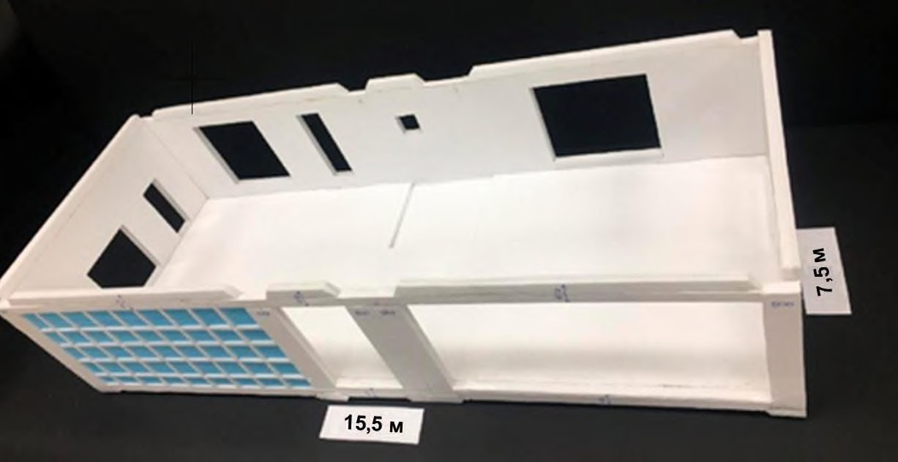
Пример плана этажа здания из КГМ приведен на рисунке 6.3.
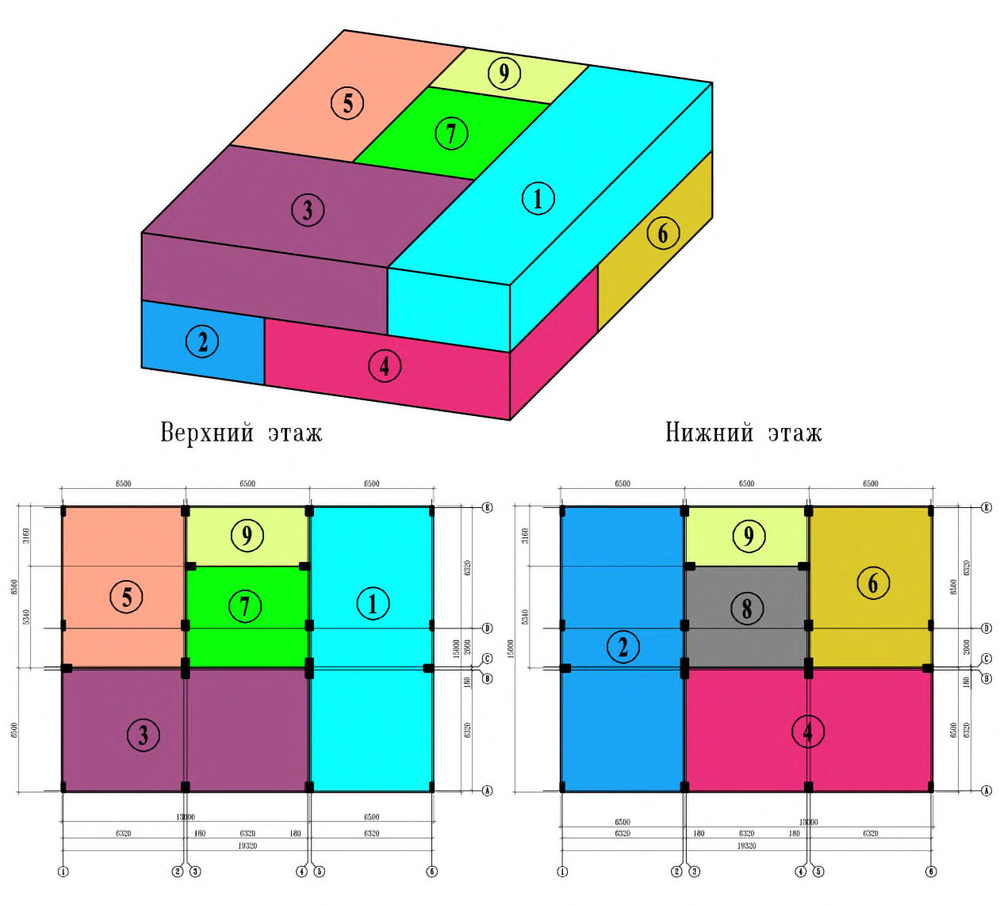
а - пространственная схема сборки блоков; б - план верхнего этажа; в - план нижнего этажа; 1 -6 -основной КГМ; 7, 8 модуль МОП; 9 - двухэтажный модуль ЭВЛ
Рисунок 6.2 - Пример схемы сборки здания
Рисунок 6.3 - Пример плана типового этажа жилого здания
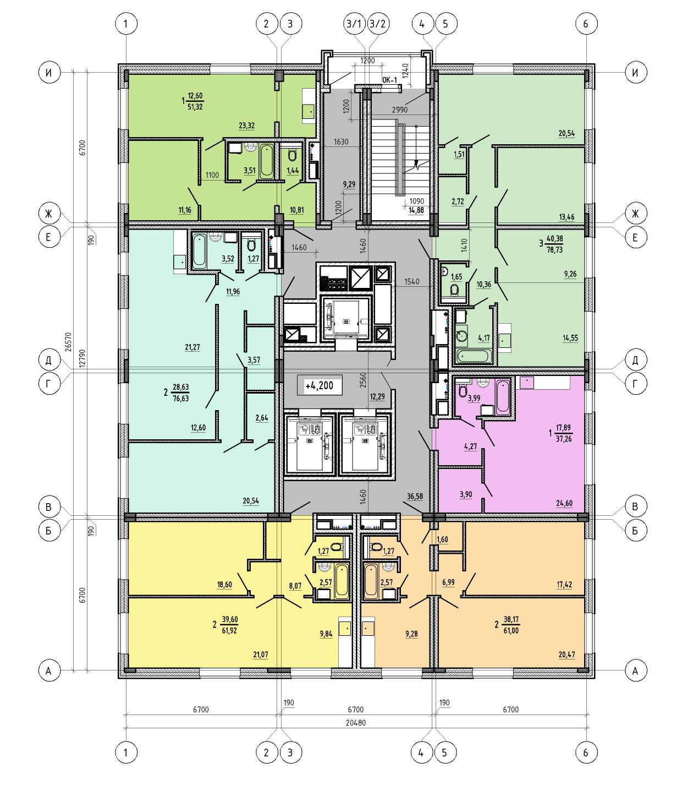
Основная номенклатура и типы КГМ и пространственных элементов показаны на рисунке 6.4:
1 - основной КГМ (жилая часть - одна или несколько квартир (помещений)) система ребристых диафрагм внутренних и наружных стен, ограждающей верхней на металлокаркасе и несущей нижней плит перекрытий;
2 - КГМ с меньшим числом пилонов;
- 3 - КГМ МОП ЛФУ. Вертикальные стены модуля МОП имеют сплошные сечения со встроенными в них рабочими пилонами;
- 4 -модуль ЭВЛ, от одного до трех этажей (частично замкнутый пространственный элемент);
- 5 - блок-модуль ШЛ, от одного до трех этажей (частично замкнутый пространственный элемент);
6 - блок многоэтажной системы балконов, эркеров и т. п. (частично замкнутый пространственный элемент из легких конструктивных материалов);
7 - вход (вариант - незамкнутый пространственный элемент).
1 - основной КГМ; 2 - КГМ с меньшим числом пилонов; 3 - КГМ МОП ЛФУ; 4 - модуль ЭВЛ; 5 - блок-модуль ШЛ; 6 - блок многоэтажной системы балконов, эркеров и т. п; 7 - вход
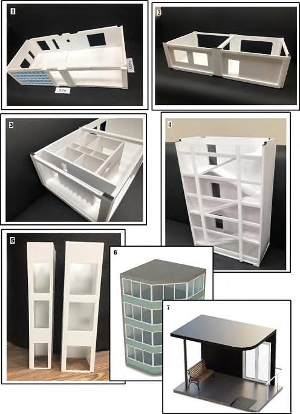
Рисунок 6.4
- Номенклатура объемных модулей и пространственных элементов
6.2Лестнично-лифтовые узлы. Места общего пользования
В модулях МОП должны быть предусмотрены сквозные проемы, необходимые для эксплуатации этажей-секций, исходя из несущей способности конструкций.
6.3Шахты лифтов
Рисунок 6.5 - Пример узла примыкания шахты к стене модуля МОП
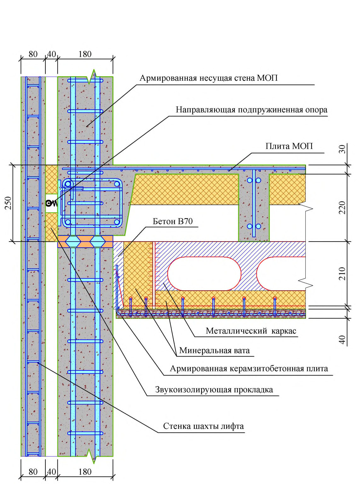
6.4Эвакуационная лестница, места общего пользования
6.5Лоджии, эркеры и балконы
6.6Фасады здания
- из пенополистирола по ГОСТ 15588 с учетом противопожарных требований;
- плит из минеральной ваты по ГОСТ 9573 плотностью не более 90 кг/м³ ;
- других теплоизоляционных материалов.
Толщину утеплителя определяют теплотехническим расчетом (по СП 50.13330).
6.7Входная группа
6.8Оконные блоки, двери и витражи
6.9Звуко-, теплои пожароизоляция при производстве отдельных элементов модуля и объемной его сборке
6.10Кровли зданий
Вентиляционные каналы, предназначенные для удаления воздуха, следует предусматривать с расстоянием от кровли до нижней части выпускного устройства не менее 5 м. При этом следует учитывать требования ГОСТ Р ЕН 13779.
7Конструктивные решения зданий из крупногабаритных модулей
7.1Основные положения
- применять, исходя из конструктивных решений, обеспечивающих нормативную несущую способность здания, качественное сырье и материалы, отвечающие проектным требованиям по прочности, долговечности и ремонтопригодности конструкций, выполненных из этих материалов;
- учитывать при проектировании условия климатического района строительства, т. е. назначать параметры сырья и материалов, исходя из физикомеханических, теплотехнических, огнестойких, акустических и других характеристик с учетом особенностей технологии изготовления, монтажа, эксплуатации, а также возможного изменения их свойств во времени;
- предусматривать последовательность и порядок выполнения работ по устройству конструкций модулей, в том числе связей, стыков и узлов, позволяющих обеспечить надежную работу их в процессе эксплуатации здания.
- выбором для конструкций наружных ограждений и их отдельных слоев материалов с морозостойкостью, соответствующей климатическому району строительства и требованиям эксплуатации;
- сочетанием в слоистых конструкциях материалов, исключающих во время расчетного срока эксплуатации расслоение, старение утеплителя и разрушение от коррозии расчетных металлических соединений и связей по ГОСТ 31384, СП 28.13330, СП 72.13330;
- применением тепло-, звуко-, гидро- и пожароизоляционных материалов и прокладок по СП 50.13330, СП 51.13330, расположенных в толще несущих конструкций, соответствующих расчетному сроку эксплуатации здания;
- конструированием внутренних и наружных стен, плит перекрытий, соединений их между собой и с другими элементами объемных модулей или пространственными конструкциями, обеспечивающих необходимый уровень трещиностойкости.
7.2Здания из крупногабаритных модулей
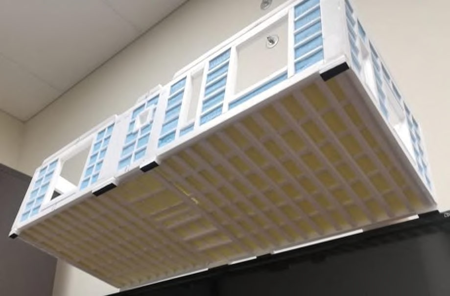
Рисунок 7.1 - Опорные зоны модуля а б
Рисунок 7.2 - Модули эвакуационно-лестничного узла ( а ) и мест общего пользования ( б )
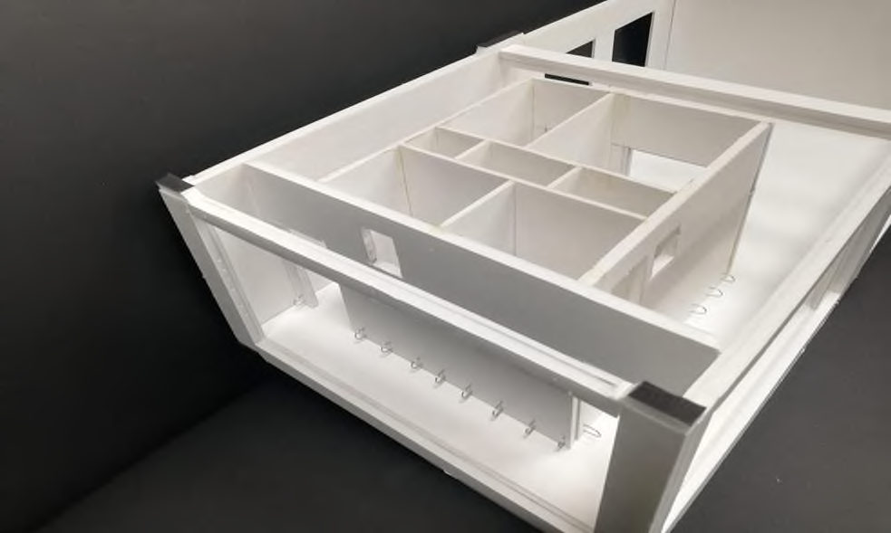
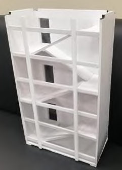
- по длине - минус 2 мм;
- по ширине - минус 2 мм;
- по высоте сечения - минус 2 мм;
- по диагоналям изделия - ±4 мм;
- в (из) плоскости изделия - ±3 мм;
- по установке закладных деталей - ±2 мм.
- по длине модуля - минус 5 мм;
- по ширине модуля - минус 5 мм;
- по высоте модуля - минус 5 мм;
- по высоте нижней плиты перекрытия - ±3 мм;
- по диагонали нижней плиты перекрытия - ±4 мм;
- в (из) плоскости нижней плиты - ±3 мм;
- по установке закладных деталей нижней плиты - ±2 мм;
- по высоте железобетонной верхней плиты - ±3 мм;
- по диагонали верхней плиты - ±4 мм;
- по диагонали объемного модуля - ±7 мм (рисунок 7.3).
Размеры объемных модулей в плане и привязки их к планировочным осям зависят от схемы опираний пилонов верхних модулей на пилоны нижних и их расположения в зависимости от объемно-планировочных решений секций, квартир, МОП, исходя из необходимой несущей способности элементов конструкции.
Рисунок 7.3 - Допуски на изготовление стеновых панелей и установку закладных деталей
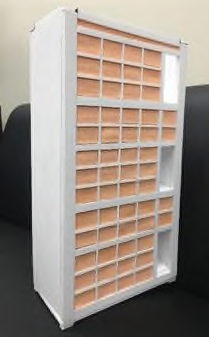
а
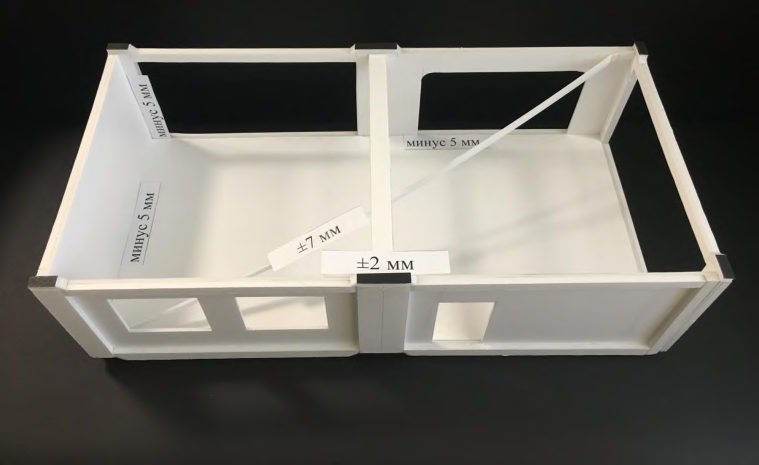
Рисунок 7.4 - Допуски на отклонения в собранном модуле верхней ( а ) и нижней плит ( б )
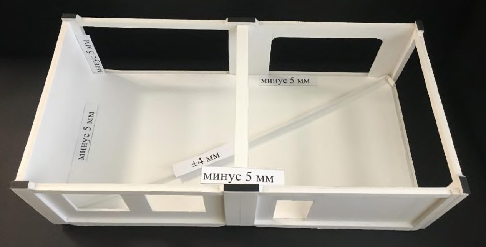
Рисунок 7.5 - Угловой узел сопряжения двух смежных модулей
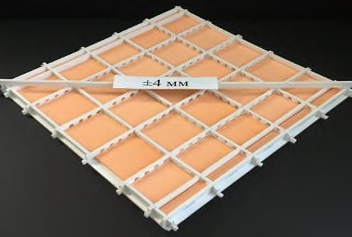
7.3Узлы, стыки и герметизация швов объемных крупногабаритных модулей
- модуля с модулем с поэтажной «перевязкой»;
- модуля с модулем без поэтажной «перевязки» (модули ЭВЛ и МОП).
- а) эксплуатационные:
- обеспечение нормативной теплоизоляции,
- обеспечение гидроизоляции от атмосферных осадков,
- обеспечение требуемой звукоизоляции,
- обеспечение проектной долговечности,
- отсутствие элементов, ухудшающих интерьер помещений,
- обеспечение огнестойкости конструкции;
- б) конструктивные:
- обеспечение работы стыка в соответствии с принятой расчетной схемой здания,
- обеспечение равнопрочности соединяемых в стыке участков сборных элементов на расчетные силовые воздействия,
- обеспечение необходимой пространственной жесткости и устойчивости здания на всех этапах монтажа и при эксплуатации с учетом возможных аварийных воздействий, в том числе предотвращения прогрессирующего обрушения,
- обеспечение несущей способности закладных деталей в бетоне и болтовых соединений; в) производственные:
- обеспечение механизации и роботизации изготовления модулей,
- обеспечение условий монтажа модулей, в том числе при отрицательных температурах на строительной площадке.
Пример конструктивного решения узла сопряжения приведен на рисунке 7.6. Пример конструктивного решения узлов передачи вертикальных усилий через пилоны и нижние обвязочные балки приведен на рисунке 7.7.
Рисунок 7.6 - Пример конструктивного решения узла сопряжения модулей
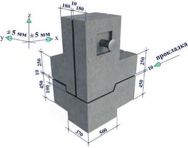
Рисунок 7.7 - Конструктивное решение узлов передачи вертикальных усилий через пилоны и нижние обвязочные балки
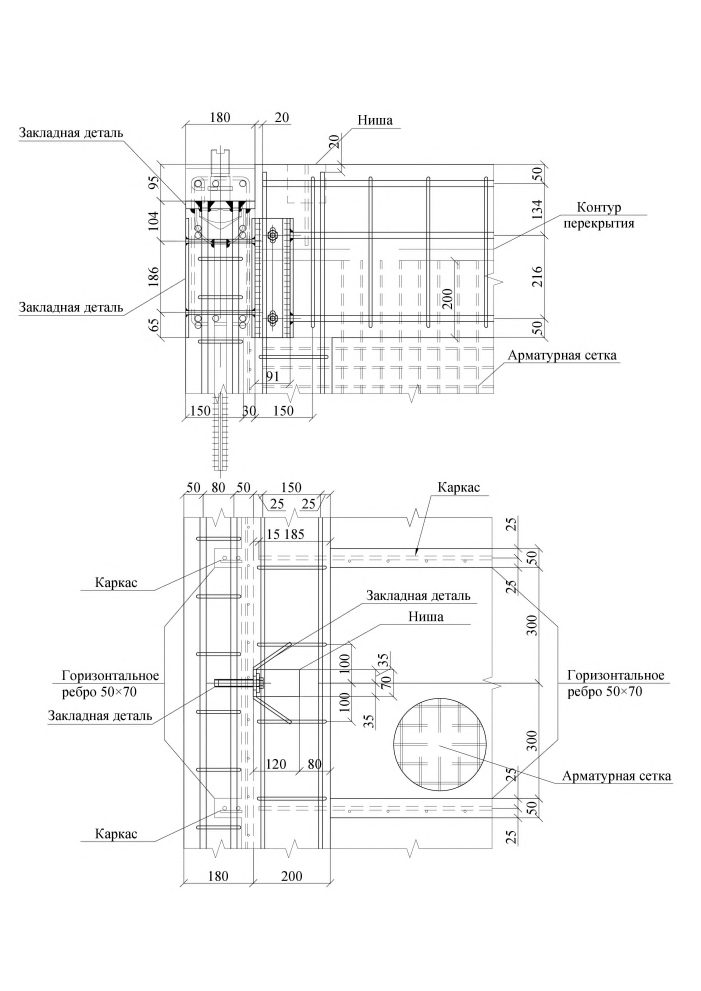
7.4Конструктивное решение полносборного крупногабаритного модуля
Рисунок 7.8 - Объемный крупногабаритный модуль в сборе
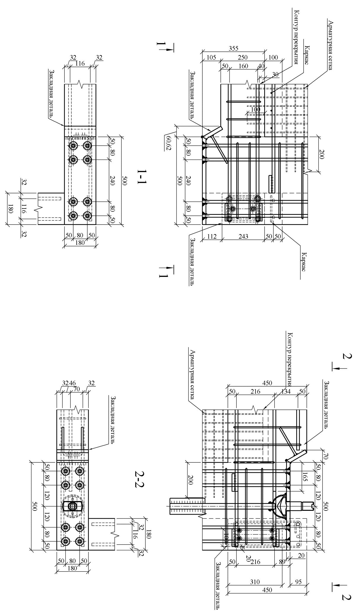
Рисунок 7.9 - Вариант объемного крупногабаритного модуля с большими проемами для проектов со свободной планировкой (металлокаркас верхней плиты перекрытия)
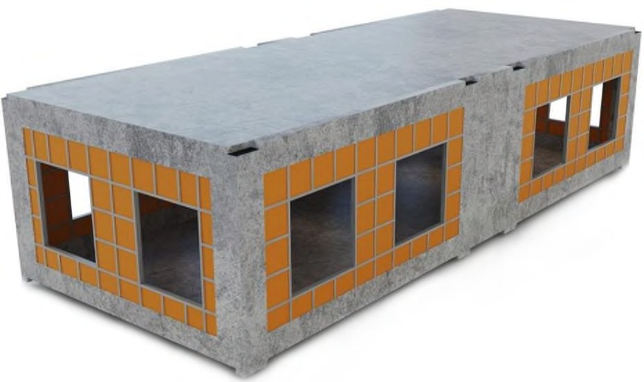
Рисунок 7.10 - Пример узла сопряжения вертикальных стен
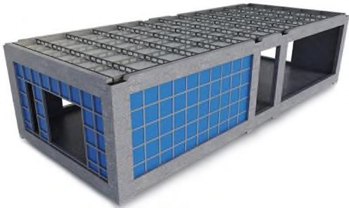
7.5Плоские элементы модуля
7.5.1 Нижняя плита модуля
7.5.1.1 Нижняя часть модуля представляет собой монолитную ребристую плиту, где высота несущих ребер в продольном и поперечном направлениях по всему периметру изделия, а также поперечных внутренних несущих ребер меньшего сечения составляет 250 мм (постоянная величина) или, при необходимости, по расчету в зависимости от высоты здания.
7.5.1.2 Нижняя железобетонная ребристая плита при сборке модуля объединяет выпуски всех внутренних и наружных стен, установленных на стапеле, образуя при этом частично замкнутую сборную объемную систему типа «стакан».
7.5.1.3 Размеры поперечных сечений несущих ребер плиты зависят от вертикальной нагрузки на перекрытии. При постоянной высоте сечения 250 мм его ширина может меняться в сторону увеличения в зависимости от этажности и назначения класса здания по пожарной безопасности, до толщины сечения пилонов, но не более 250 мм. Шаг поперечных ребер всегда равен 600 мм. Толщина внутренних ребер - 100 мм, за исключением поперечных ребер, объединяющих пилоны.
7.5.1.4 Нижняя плита имеет дополнительные продольные ребра для обеспечения нормативной прочности, жесткости и прогиба в местах максимального пролета. Шаг ребер и сечения определяют расчетом, однако при проектировании рекомендуется устанавливать размер 600 мм с учетом «перевязки» модулей и работы горизонтальных дисков, образованных общей системой плит и узлов сопряжения здания, на восприятие горизонтальных нагрузок.
Размеры сечений продольных ребер, определяемые расчетом, должны быть не менее 130×100 мм с шагом 600 мм.
7.5.1.5 Нижнюю плиту изготовляют из высокопрочного, пластичного, самоуплотняющегося бетона класса В70 с использованием бетононасоса, без применения на стапеле каких-либо виброплощадок.
7.5.1.6 Верхнюю часть нижней плиты на стапеле следует обрабатывать шлифовальным оборудованием, которое обеспечивает ровную поверхность изделия (категория поверхности не ниже А7 по ГОСТ 13015), готовую под окончательную отделку и устройство чистых полов.
7.5.1.7 В межреберном пространстве нижней плиты в определенных проектом местах следует устраивать свободные проемы для прохождения горизонтальных разводок инженерных коммуникаций, размещения коммуникаций сантехкабин, непосредственно отопительных приборов, а также другого оборудования.
7.5.1.8 Нижнюю плиту перекрытия модуля следует армировать в период монтажа ранее изготовленных ребристых диафрагм и торцевых стен в роботизированный с гидравлическим управлением стапель для сборки модуля в объемный элемент. Создание объемных каркасов основных, несущих уширенных ребер нижней плиты проводится таким же образом, как и армирование верхних ребер обвязочных балок-стен ребристых диафрагм.
- 7.5.1.9 Рабочая горизонтальная арматура несущих продольных и поперечных ребер плиты должна быть соединена с выпусками арматуры пилонов с торцевых и продольных сторон с помощью резьбовых соединительных муфт. Поперечную арматуру (хомуты) устанавливают с шагом и диаметром по расчету.
- 7.5.1.10 Плоские поперечные и продольные каркасы нижней плиты перекрытия устанавливают в объемные каркасы на толщину ребра и развязывают между собой с установкой дополнительной арматуры в виде скоб в местах образования поперечных ребер. Пример армирования приведен на рисунке 7.11.
- 7.5.1.11 На собранную каркасную систему нижней плиты сверху должна быть уложена сетка с размером ячеек по расчету для армирования тела плиты (оболочки), которая закрепляется к арматурным ребрам каркаса.
Рисунок 7.11 - Пример армирования нижней плиты модуля
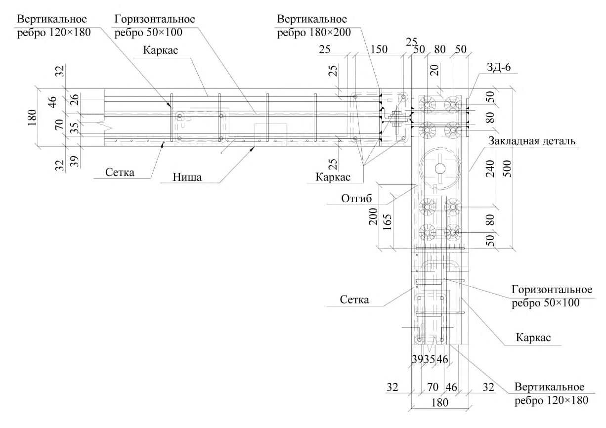
7.5.2 Верхняя плита перекрытия модуля
- 7.5.2.1 Плиту потолка объемного модуля следует выполнять из тяжелого бетона класса В70 толщиной 30 мм по всей площади изделия и армировать сеткой из высокопрочной проволоки Вр500 диаметром 4-5 мм с шагом установки продольной и поперечной арматуры по расчету с последующим образованием монолитного армированного пояса-стыковки верхних обвязочных балок модуля с металлокаркасом верхней плиты перекрытия (рисунок 7.12).
- 7.5.2.2 Для обеспечения нормативной прочности и жесткости к сетке следует крепить легкий, жесткий металлический каркас (система металлических балок) с помощью связей из нержавеющей стали (ГОСТ 535, ГОСТ 27772).
- 7.5.2.3 Металлокаркас в плане представляет собой перекрестную систему с размерами ячеек 1200×1200 мм. Плоские каркасы образованы из пластин толщиной 8 мм с высотой ребра не менее 210 мм. Пластины облегчены по массе за счет образования в них крупноразмерных отверстий (максимум до 110 мм), через которые проектом предусматривается прокладка инженерных систем (рисунок 7.12).
7.5.2.4 Верхнюю плиту следует соединять с верхними обвязочными балками стен-оболочек (рисунок 7.13).
Рисунок 7.12 - Общий вид верхней плиты с металлическим каркасом
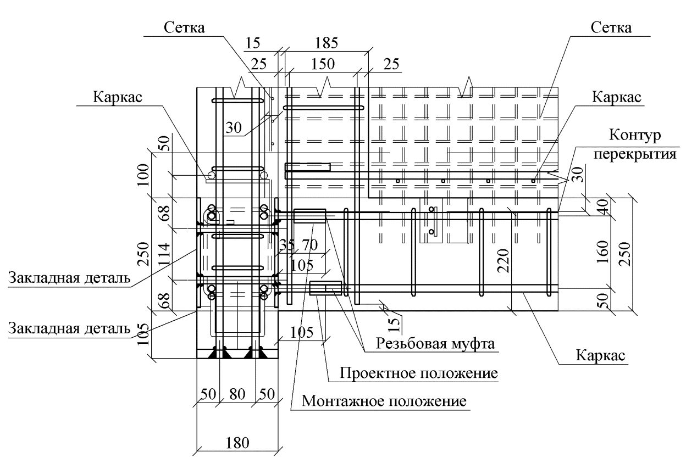
Рисунок 7.13 - Фрагмент плиты и верхней балки стены-оболочки
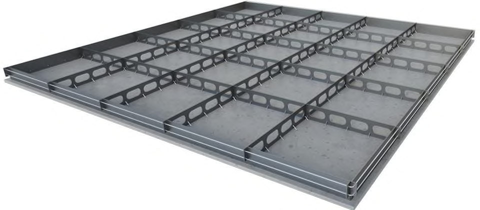
7.5.2.5 Все закладные детали модуля, а также отдельные, плоские и объемные арматурные каркасы должны изготовляться в кондукторах сборки для обеспечения требуемой точности геометрических размеров изделий.
Отклонения изготовления закладных и арматурных изделий не должны превышать ±2 мм от размеров, указанных в рабочей документации.
7.5.3 Продольные и торцевые стены
- 7.5.3.1 Пилоны стеновых панелей являются одним из важнейших элементов зданий. Пилоны в объемно-модульных зданиях воспринимают переменные нагрузки как на сжатие при эксплуатации, так и на растяжение при транспортировании и монтаже.
- 7.5.3.2 Надежную работу этих конструкций обеспечивает высокая точность монтажа. Для этого в верхней и нижней частях пилонов запроектированы и установлены металлические пластины (закладные детали) толщиной не менее 20 мм и размерами в плане, соответствующими размерам поперечного сечения этих пилонов (например, для зданий высотой до 17 этажей - 500×180 мм по расчету).
- 7.5.3.3 Пластины обеспечивают надежное сварное соединение с внутренней продольной рабочей арматурой пилона. Число стержней в сечении и их диаметры определяются расчетом.
- 7.5.3.4 Сварное соединение пластин с рабочей арматурой в раззенкованные отверстия следует осуществлять в высокоточных кондукторах сварки, имеющих допуск не более 2 мм.
- 7.5.3.5 После сварки рабочей арматуры с пластиной следует осуществлять тщательную шлифовку наружных поверхностей пластин в целях обеспечения точных горизонтальных плоскостей.
- 7.5.3.6 Передача вертикальных нагрузок при условии высокоточного монтажа позволяет включать, при необходимости («сухой стык»), в работу арматуру на сжатие при плотном примыкании пластин (закладных деталей).
- 7.5.3.7 Вдоль вертикальной (продольной) рабочей арматуры пилона по его высоте расположена поперечная арматура с диаметрами и шагом расположения по расчету.
- 7.5.3.8 Для удобства и обеспечения высокоточного монтажа выступающие и скрытые части пилонов с закладными деталями выполняют роль нижних и верхних «ловителей», а для этого в модуле все несущие пилоны вместе с верхними и нижними закладными деталями смещены относительно нижней и верхней плит модуля на 100 мм вниз (см. рисунок 7.11).
Такая схема монтажа с учетом поэтажной «перевязки» модулей позволяет обеспечить дополнительную конструктивную жесткость здания.
- 7.5.3.9 Рабочая арматура обвязочных балок, соединяющих между собой пилоны, представляет собой объемный каркас из продольных стержней с обвязкой поперечной арматурой, пересекающий пилон в верхней его части.
- 7.5.3.10 Наличие стыков в стержнях продольной арматуры по всей длине обвязочной балки в одном поперечном сечении не допускается. Диаметры продольной и поперечной арматуры и шаг их установки следует определять расчетом.
- 7.5.3.11 В расширенных ребрах изделий устанавливают плоские каркасы, соединяемые затем с помощью отдельных арматурных элементов в объемные пространственные каркасы. Плоские сварные каркасы следует устанавливать в бетонные ребра меньшей площади сечений.
- 7.5.3.12 В диафрагму, в плоскую поверхность части стены, должна быть установлена крупногабаритная плоская сетка с диаметрами и шагом ячеек по расчету.
7.5.3.13 Плоский элемент стены изготовляется как единый элемент и в одной своей нижней части грани имеет выпуски арматуры (кроме тела пилонов) и закладные детали на величину толщины ребра нижней плиты минус 2 см (постоянное значение).
7.5.3.14 Армирование торцевых поперечных стен модулей аналогично продольным стенам, за исключением случаев, когда в соответствии с проектом пилоны размещены в торцевых поперечных стенах вместо продольных.
7.5.3.15 В целях точной установки изделий торцевых стен в кондукторе сборки с продольными стенами к выпускам арматуры следует устанавливать не менее двух опорных пластин на одно изделие, используемых в качестве монтажных закладных деталей.
7.6Монолитные конструкции зданий
7.6.1 Фундаменты
7.6.1.1 Фундаменты рекомендуется принимать в зависимости от инженерногеологических условий плитными или свайно-плитными. Плиту изготовляют из монолитного бетона.
7.6.1.2 Плитные фундаменты следует проектировать постоянной или переменной толщины. Толщину плит, класс бетона и армирование следует определять расчетом из условия обеспечения прочности, включая прочность на продавливание пилонами или сваями, жесткости и трещиностойкости.
7.6.1.3 Толщину сплошных плит следует принимать по расчету, класс бетона не менее В25, коэффициент продольного армирования не менее 0,3 %, марка по водопроницаемости не менее W6, морозостойкость F75.
7.6.1.4 Температурные швы допускается не предусматривать в фундаменте при условии учета дополнительных напряжений и деформаций.
7.6.1.5 Подготовка основания под плиту и конструкция фундаментов зданий должны обеспечивать равномерную осадку здания или с отклонениями не более допуска ±5 мм по плоскости секций здания. Крен здания не должен превышать допустимых значений.
7.6.1.6 Ленточные фундаменты при проектировании зданий из КГМ допускается принимать при малоизменяемых по сжимаемости основаниях с нормативным давлением не менее 2,5 кгс/см² и малой этажности. При этом необходимо проектировать ленточные фундаменты в монолитном исполнении.
7.6.1.7 Отклонения при установке закладных деталей от размеров, предусмотренных проектной документацией, на фундаментах по осям x , y , z допускаются не более ±5 мм в одной секции. При разметке закладных деталей необходимо тщательно выверять размеры диагоналей под установку модулей в секции, с тем чтобы впоследствии обеспечить высокое качество монтажа надземной части здания.
7.6.1.8 По наружному контуру фундаментной плиты целесообразно устраивать полузамкнутое пространство («корыто») с возведением монолитных вертикальных стен и с последующим устройством внешней гидроизоляции на высоту выше уровня грунтовых вод до отметки ±0,00.
7.6.1.9 Готовые на заводе-изготовителе модули нулевого цикла устанавливают вовнутрь монолитного полузамкнутого пространства («корыто»). Такая конструкция обеспечивает герметичность устройства подвальной части здания, гаража-паркинга и помещений инженерного назначения.
7.6.1.10 Свайно-плитные фундаменты выполняют из монолитного железобетона под всей площадью здания в виде фундаментной плиты постоянной или переменной толщины и свай по СП 24.13330.
7.6.1.11 Проектом допускается предусматривать в подземной или полузаглубленной части здания гаражи-паркинги в крупногабаритном исполнении или при строительстве зданий в малоэтажном исполнении с опиранием опорных частей модулей (пилонов) непосредственно на фундаментную плиту.
7.6.2 Перекрытие подвала и первый этаж
7.6.2.1 Перекрытие над подвалом, являющееся основанием для монтажа КГМ, как правило, проектируют из монолитного железобетона.
7.6.2.2 Перекрытие из монолитного железобетона следует проектировать и над первым этажом, если в нем размещены магазины, рестораны, аптеки, в том числе с высотой помещения, превышающей 3,5 м.
7.6.2.3 Монолитные конструкции подвала или первого этажа, как правило, выполняют с вертикальными несущими элементами, расположенными соосно с пилонами КГМ.
7.6.2.4 Если вертикальные несущие элементы подвала и (или) первого этажа не выполнены по одной вертикальной оси, под ними располагают распределительные балки, балки-стенки или предусматривают утолщение перекрытий.
7.6.2.5 При пролетах до 6-8 м перекрытия выполняют преимущественно плоскими, а при бóльших значениях - с капителями, ребристыми или кессонными.
При пролетах более 6 м и соответствующем технико-экономическом обосновании допускается применение напрягаемой арматуры с натяжением на бетон.
7.6.2.6 Основные конструктивные параметры - толщины плит, класс бетона и армирование зависят от нагрузки, длины пролетов и определяются расчетом.
7.6.2.7 При расчете рекомендуется учитывать нелинейные свойства железобетона, образование трещин и понижение жесткости сечений.
В первом приближении при расчете горизонтальных элементов рекомендуется принимать пониженный коэффициент модуля деформации бетона - 0,3.
7.6.2.8 Минимальный поперечный размер колонн рекомендуется принимать 300 мм, стен и пилонов - не менее 200 мм, процент армирования - не более 10.
7.6.2.9 При необходимости применения большего процента армирования рекомендуется использовать сталежелезобетонные колонны.
7.6.2.10 При расчете колонн и пилонов в первом приближении рекомендуется принимать пониженный коэффициент модуля деформации бетона 0,6.
8Расчет многоэтажных зданий из крупногабаритных модулей
8.1Основные положения
- эксплуатационные нагрузки;
- монтажные нагрузки;
- транспортные нагрузки;
- нагрузки в стадии изготовления;
- аварийные воздействия (защита от прогрессирующего обрушения).
Принимают следующие обозначения и направления армирования (рисунки 8.1 и 8.2).
Рисунок 8.1 - Армирование плоского элемента
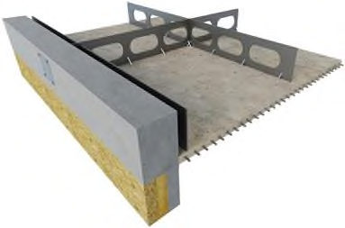
Рисунок 8.2 - Армирование стержня
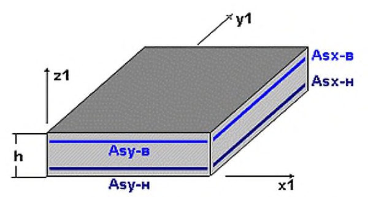
Для плит перекрытий местные оси x 1 , y 1 , z 1 назначают так, чтобы они совпадали с глобальными осями расчетной схемы (рисунок 8.1). Для пилонов и стен местную ось x 1 направляют горизонтально, ось y 1 направляют вертикально.
1-й этап - расчет многоэтажного здания по предварительно разработанному объемно-планировочному и конструктивному решению. Внесение изменений в конструктивные решения здания и модулей;
2-й этап - расчетный анализ работы пространственных КГМ - основного и вспомогательных - элементы входной группы, ШЛ и лестничные клетки, балконы и лоджии и т. д. на усилия, полученные из расчета здания в целом, и на нагрузки, возникающие при сборке модулей, транспортировании и монтаже. Внесение изменений в конструктивные решения модулей;
3-й этап - расчет плоских элементов КГМ на усилия, полученные из расчета 2-го этапа, и на нагрузки, возникающие при изготовлении, транспортировании и сборке. Внесение изменений в конструктивные решения элементов модулей;
4-й этап - расчет многоэтажного здания, его модулей и элементов с уточненными параметрами сечений, армирования и характеристиками узловых сопряжений на эксплуатационные и доэксплуатационные нагрузки. Внесение изменений в конструктивные решения здания и модулей. Расчетный анализ многоэтажного здания на защиту от прогрессирующего обрушения. Внесение дополнительных конструктивных решений при необходимости.
8.2Нагрузки, воздействия и характеристики материалов
Допускается принимать более низкие, обоснованные в установленном порядке, значения коэффициентов динамичности, но не ниже 1,25.
Допускается принимать более низкие, обоснованные в установленном порядке, значения коэффициентов динамичности, но не ниже 1,25.
8.3Расчетная схема
Rx - погонная жесткость связи на растяжение-сжатие вдоль глобальной оси x ;
Ry - погонная жесткость связи на растяжение-сжатие вдоль глобальной оси y ;
Rz - погонная жесткость связи на растяжение-сжатие вдоль глобальной оси z ;
Rux - погонная жесткость связи на поворот вокруг глобальной оси x;
Ru y - погонная жесткость связи на поворот вокруг глобальной оси y ;
Ruz - погонная жесткость связи на поворот вокруг глобальной оси z .
Для плит перекрытий местные оси x 1 , y 1 , z 1 назначают так, чтобы они совпадали с глобальными осями расчетной схемы. Для пилонов и стен местную ось x 1 направляют горизонтально, ось y 1 - вертикально.
- давление под подошвой фундамента;
- разница осадок и крены фундаментных конструкций (определяют по СП 22.13330);
- перемещения здания от основного сочетания нагрузок (в том числе с учетом действия ветровой нагрузки), горизонтальное смещение верха здания;
- ускорение колебаний верхних этажей (в соответствии с СП 20.13330);
- перекос конструкций одного этажа;
- укорочение наиболее нагруженных пилонов;
- усилия, напряжения и армирование в основных несущих элементах (фундаментных конструкциях, пилонах, ребрах и оболочки стен, балках и плитах перекрытий);
- максимальная ширина раскрытия трещин;
- усилия и перемещения в узлах сопряжения конструкций по результатам общего расчета конструктивной системы.
- прогибы плит и балок перекрытий;
- коэффициент запаса устойчивости формы и положения конструктивной системы;
- формы и частоты собственных колебаний здания.
8.4Расчетные условия
Расчет стальных конструкций следует выполнять в соответствии с требованиями СП 16.13330.
0,3 - при продолжительном раскрытии трещин;
- 0,4 - при непродолжительном раскрытии трещин.
- 1-я стадия - конструкции первого этажа с учетом постоянных нагрузок;
- (2n ) -я стадия - конструкции со второго по n этаж с учетом постоянных нагрузок;
- ( n + 1)-я стадия - приложение временных нагрузок;
- (n + 2)-я стадия - приложение ветровой нагрузки.
Модальный анализ здания следует выполнять с учетом постоянных и временных длительных нагрузок.
Связи блоков следует проектировать на действие продольной и двух поперечных сил. Для снижения возникающих усилий, при необходимости, следует увеличить число связей по высоте пилонов. Требования к расчету закладных деталей приведены в СП 63.13330 и [6].
8.5Методика определения податливости (жесткости) контактных зон пилонов и балок модулей между собой
где , m - коэффициент податливости растворного шва; hpl - толщина железобетонной конструкции;
Epl , - модуль упругости железобетонной конструкции; шва , m - податливость холодного шва (верх панели - низ плиты перекрытия).
9Внутренние инженерные сети и системы
9.1Основные положения
Инженерные системы зданий жилых зданий высотой более 75 м, общественных зданий высотой более 55 м следует предусматривать в соответствии с СП 253.1325800.
Рисунок 9.1 - Образец коллекторного шкафа
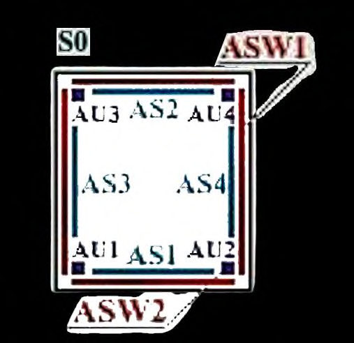
Рисунок 9.2 - Схема размещения инженерных сетей и систем
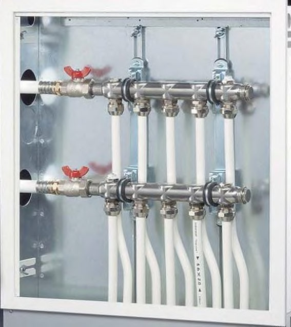
Рисунок 9.3 - Схема размещения на этаже вертикальных инженерных сетей на примере жилого здания
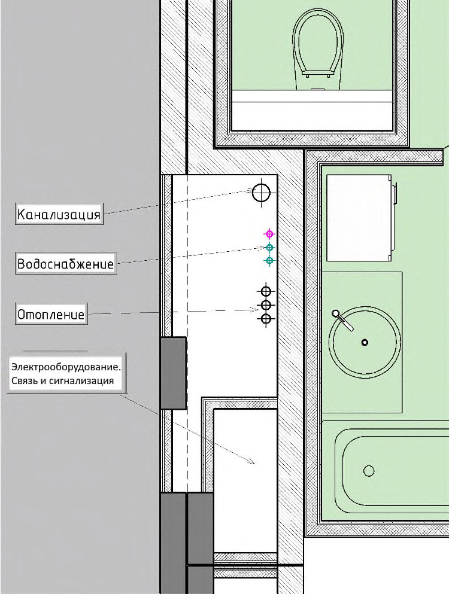
9.2Система теплоснабжения
- ГВС здания аренды и жилья;
- отопление аренды и жилья;
- вентиляция и ВТЗ коммерческих помещений (при необходимости).
Вторичные контуры систем отопления, теплоснабжения, вентиляции, ГВС должны быть оборудованы терморегуляторами, приборами контроля и учета с ультразвуковыми теплосчетчиками в соответствии с правилами учета тепловой энергии и теплоносителя в действующих сводах правил.
Для теплоизоляции теплообменного оборудования следует предусматривать теплоизоляционные кожухи.
Трубопроводы сетевого контура, систем отопления, теплоснабжения вентиляции и ГВС выполняют из стальных труб по ГОСТ 8732, ГОСТ 10704 и водогазопроводных труб по ГОСТ 3262. Температурный график тепловой сети принимают в соответствии с техническими условиями.
- отопление - 90°С-65 °С;
- теплоснабжение стоянки автомобилей - 90 °С-65 °С;
- вентиляция - 90°С-65 °С;
- ГВС - 65 °С (на выходе из теплообменника).
Средства крепления, неподвижные и подвижные опоры, виброизоляторы и компенсаторы следует выбирать в соответствии с расчетом и учетом удобства эксплуатации.
9.3Система водоснабжения
9.4Система водоотведения
9.5Система электроснабжения
Обеспечение качества электроэнергии и уровней напряжения следует предусмотреть в соответствии с требованиями ГОСТ 32144.
В системе ВРУ-РУ (ГРЩ) 0,4 кВ ТП электрическая нагрузка на вводных панелях ВРУ не превышает 630 А в соответствии с ГОСТ 32396, а ток отходящих линий - 250 А.
Магистральные распределительные сети квартирных «стояков» следует выполнять с применением медных токопроводящих жил.
- насосная станция;
- центральный тепловой пункт (или ИТП);
- электропитание оборудования постов охраны, аппаратуры технических средств безопасности;
- лифты (предназначенные для транспортирования пожарных бригад);
- оборудование сетей связи;
- огни светового ограждения;
- электроприемники системы противодымной защиты;
- системы автоматической пожарной сигнализации, оповещения и управления эвакуацией;
- аварийное и эвакуационное освещение;
- электроприемники систем автоматического пожаротушения и противопожарного водопровода;
- электроприемники противопожарных устройств систем инженерного оборудования;
- силовые щиты цепей управления защиты от замораживания приточных установок.
Рабочее освещение:
- автоматическое - от сумеречных датчиков;
- местное (ручное) - с фасада щита освещения;
- с диспетчерского поста.
Аварийное/эвакуационное:
- включено постоянно;
- местное (ручное) - с фасада щита освещения;
- с диспетчерского поста.
Рабочее освещение:
- включено постоянно;
- местное (ручное) - с фасада щита освещения;
- с диспетчерского поста.
Аварийное/эвакуационное:
- включено постоянно (в случае отсутствия естественного освещения);
- местное (ручное) - с фасада щита освещения;
- с диспетчерского поста.
9.5.19 Управление освещением лестничных клеток подземной части
Рабочее освещение:
- автоматическое - датчики движения;
- местное (ручное) - с фасада щита освещения;
- с диспетчерского поста.
Аварийное/эвакуационное:
- включено постоянно;
- местное (ручное) - с фасада щита освещения;
- с диспетчерского поста.
- автоматическое - от астрономического реле;
- местное (ручное) - с фасада щита освещения;
- с диспетчерского поста.
- автоматическое - от сумеречных датчиков;
- местное (ручное) - с фасада щита освещения;
- с диспетчерского поста.
Световые указатели выходов и направления движения эвакуации необходимо запроектировать, исключая дублирование с указателями, предусматриваемыми в 9.9.7, и подключить к сети аварийного освещения.
9.6Слаботочные устройства
- МОП, нежилые помещения;
- жилые помещения (квартиры).
- контроль и управление системой подготовки воздуха в здании;
- контроль и управление освещением по датчику присутствия и освещенности в МОП и на придомовой площадке;
- централизованный контроль протечек воды;
- контроль и учет энергоносителей (вода, тепло, электроэнергия);
- систему контроля доступа и охранная сигнализация;
- видеодомофон;
- пожарную сигнализацию;
- мониторинг работы лифтового хозяйства;
- систему видеонаблюдения в МОП;
- систему оперативной диспетчерской связи между техническими помещениями и службами;
- систему речевого оповещения в МОП и квартирах;
- тревожную сигнализацию в МОП и квартирах.
- контроль и управление с устройств под управлением операционных систем iOS/Android;
- контроль и управление температурой воздуха в помещении (управление запорной арматурой батарей отопления, управление вентиляцией);
- контроль и управление освещением по датчику присутствия и освещенности, управление шторами или жалюзи;
- контроль присутствия в помещении для определения необходимости ограничения подачи энергоносителей;
- контроль протечек воды;
- учет энергоносителей (вода, тепло, электроэнергия);
- домофон.
- система контроля доступа и охранная сигнализация;
- видеодомофон;
- программируемый сценарий управления энергообеспечением и освещением в квартире.
- мультирум;
- домашний кинотеатр.
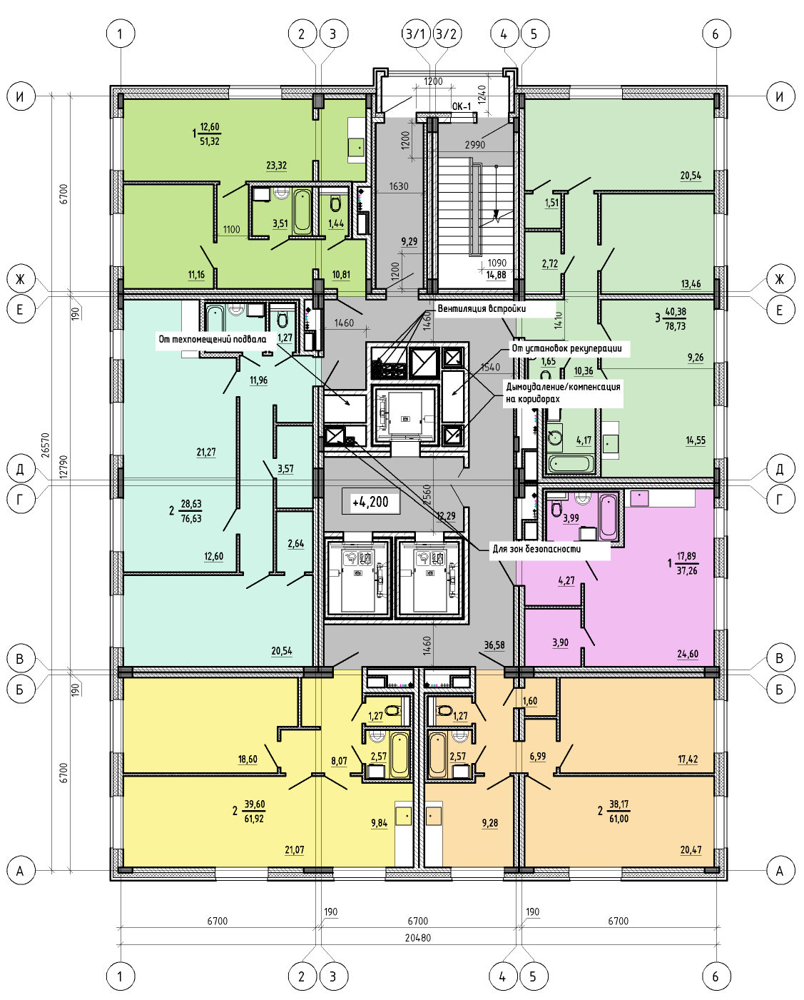
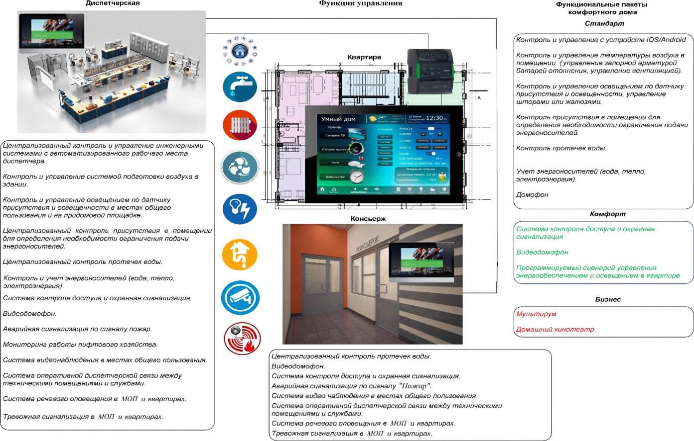
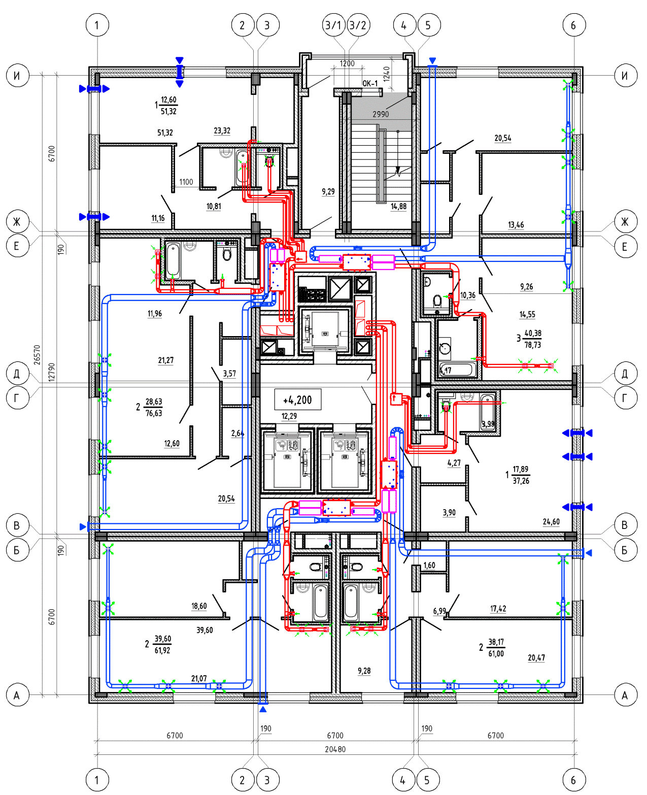
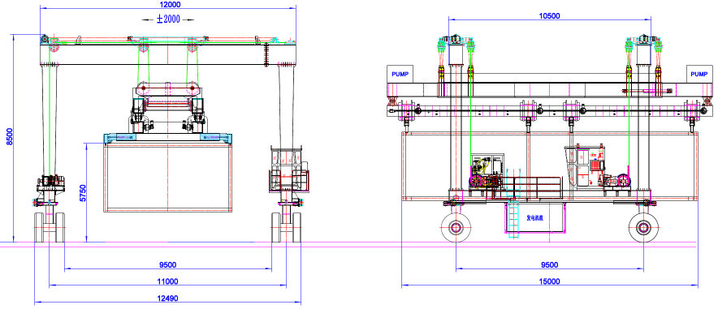
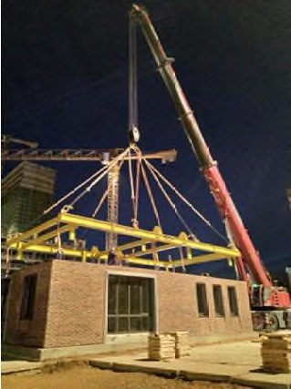
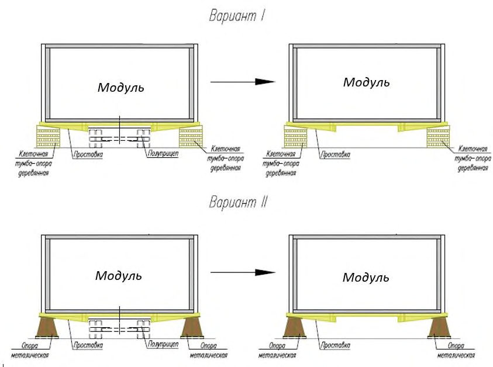
Рисунок 9.4 - Функции управления
- обеспечивать передачу разнородной информации - данные, голос, видео;
- обеспечивать передачу данных в комплексе со скоростями передачи данных 100 Мбит/с в горизонтальной подсистеме и до 1 Гбит/с в подсистеме внутренних магистралей;
- иметь модульную структуру, обеспечивающую оперативность масштабирования;
- обеспечивать высокую надежность в работе;
- обеспечивать безопасные условия эксплуатации и технического обслуживания.
- горизонтальная подсистема;
- подсистема внутренних магистралей.
Все подсистемы должны быть взаимосвязаны между собой, ни одна из подсистем не может решать возложенные на нее задачи в полном объеме без другой подсистемы.
- кабель горизонтальной подсистемы;
- коммутационные шнуры и кроссировочные перемычки горизонтального кросса;
- коммутационное оборудование в горизонтальном кроссе, на котором терминирован кабель горизонтальной подсистемы;
- телекоммуникационную розетку на рабочем месте, на которой терминирован кабель горизонтальной подсистемы;
- консолидационную точку.
- кабели магистральной подсистемы (оптоволоконный кабель, кабель с медными жилами);
- коммутационные шнуры и перемычки;
- коммутационное оборудование, на котором терминированы кабели магистральной подсистемы в главном и горизонтальном кроссах.
Документацией должна быть предусмотрена кабельная распределительная сеть с возможностью расширения. Система должна соответствовать ГОСТ Р 52023 и обеспечивать уровень сигнала на телевизионной розетке в диапазоне 60-80 дБ.
- оборудование присоединения к сети оператора (DVB-C, DVB-T2 - выбор стандарта приема телевизионного сигнала следует определить на этапе проектирования);
- оборудование усиления широкополосного телевизионного сигнала (усилители);
- кроссовое оборудование (делители, ответвители);
- внутренняя распределительная сеть;
- телевизионные розетки.
Общее число рабочих мест и высоту их установки в помещениях следует определить при проектировании.
Активные устройства системы телевидения должны быть присоединены к системе электропитания.
Мониторинг и учет профилей мощности, а также передача данных от устройства сбора и передачи данных проводятся на АРМ диспетчера.
9.7Система пожаротушения и сигнализация
Для локализации короткого замыкания в адресные линии необходимо включить модули-изоляторы короткого замыкания.
Ручные пожарные извещатели следует устанавливать на высоте (1,5 ± 0,1) м от уровня пола до органов управления извещателей.
Приборы управления должны быть установлены на негорючем основании на высоте 0,8-1,5 м от уровня пола.
9.7.7 Система оповещения и управления эвакуацией
Для оповещения о возникновении пожара и других ЧС и управления эвакуацией людей в проектируемом комплексе должна быть запроектирована СОУЭ в соответствии с требованиями СП 3.13130 (для последующего применения в системах оповещения МЧС России).
Оборудование СОУЭ следует разместить на пожарно-охранных постах каждого корпуса (помещение консьержа), помещений охраны парковки и в центральном пункте управления системой противопожарной защиты.
С помощью СОУЭ должны быть обеспечены:
- трансляция специально разработанных речевых сообщений во все зоны оповещения одновременно или в каждую по отдельности;
- трансляция сигналов ГО и ЧС во все зоны объекта в соответствии с технической документацией.
Предусматривают ручное включение системы оповещения (с микрофонной консоли) и автоматическое по сигналу «Пожар» системы пожарной сигнализации.
Все оборудование должно быть разрешено к эксплуатации на территории Российской Федерации в соответствии с порядком, установленным действующим законодательством Российской Федерации.
В соответствии с СП 134.13330 следует предусмотреть систему этажного оповещения жителей с установкой оповещателей (громкоговорителей) в лифтовых холлах, межквартирном коридоре на каждом этаже зданий.
Кабельные проводки систем противопожарных мероприятий необходимо выполнять огнестойкими линиями в соответствии с ГОСТ 31565.
При параллельной прокладке расстояние от проводов и кабелей пожарной сигнализации с напряжением до 60 В до силовых и осветительных кабелей должно быть не менее 0,5 м. Допускается уменьшить расстояние до 0,25 м от проводов и кабелей шлейфов и соединительных линий пожарной сигнализации без защиты от наводок до одиночных осветительных проводов и контрольных кабелей.
9.7.9 Внутренний противопожарный водопровод
Система ВПВ должна быть с закольцованными вводами и кольцевым магистральными трубопроводом при тупиковых стояках, раздельной с другими системами пожаротушения здания. Кольцевой магистральный трубопровод, расположенный на нижнем техническом этаже, должен быть разделен на ремонтные участки (полукольца). Пожарные краны и дополнительное оборудование (рукава, спрыски, огнетушители) в помещениях без конкретной технологии следует располагать в пожарных шкафах для двух комплектов пожарного крана и двух огнетушителей, пожарные краны в межквартирных коридорах располагаются в шкафах для двух комплектов пожарного крана. Для удобства замены/переноса ПК в помещениях без конкретной технологии на подводках должны быть установлены краны Ду50. Расстановку пожарных кранов следует выполнять в соответствии с требованиями СП 10.13130 с учетом расположения помещений и обеспечивать тушение пожара в любой точке двумя струями с расходом не менее 2,5 л/с (фактически, согласно таблице 7.3 СП 10.13130.2020 - 2,9 л/с), продолжительность работы ВПВ - 3 ч, требуемый расход - 5,8 л/с (2 × 2,9 л/с).
9.7.10 Система спринклерного пожаротушения
В зависимости от назначения помещений должна быть выполнена система сплинклерного пожаротушения.
9.7.11 Противопожарные мероприятия
Противопожарные мероприятия в смежных системах инженерного обеспечения следует выполнять согласно СП 6.13130, СП 484.1311500, СП 485.1311500, СП 486.1311500.
Питание электроприемников систем противопожарных мероприятий должно осуществляться от ППУ, которая питается от вводной панели ВРУ с устройством АВР или от ГРЩ с устройством АВР согласно СП 6.13130. Панели ППУ и АВР должны иметь боковые стенки для противопожарной защиты установленной в них аппаратуры.
9.8Система вентиляции и кондиционирование воздуха
Приток воздуха в систему поквартирной рекуперации происходит через клапаны на фасаде здания.
В системе вентиляции сдаваемых в аренду зон должны быть предусмотрены точки подключения для воздухозабора и выброса воздуха с учетом выполнения требований СП 60.13330.
На входных группах должна быть предусмотрена установка ВТЗ.
Рисунок 9.5 - Схема рекуперации типового этажа на примере жилого здания
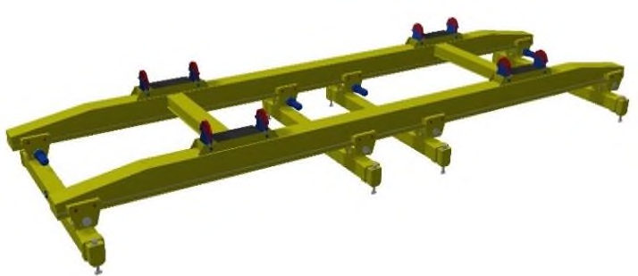
В помещениях ИТП следует предусмотреть приточно-вытяжную вентиляцию, рассчитать на воздухообмен, определяемый по теплопоступлениям от трубопроводов и установленного оборудования.
Для помещений серверных и диспетчерских пунктов, а также для иных помещений, требующих поддержания определенного температурно-влажностного режима, должно быть предусмотрено технологическое кондиционирование.
10Производство железобетонных элементов и заводская сборка крупногабаритных модулей
10.1Железобетонные элементы
Геометрические размеры изделий, а также устройство и размещение дверных и оконных проемов определяются проектом.
Несъемная опалубка - минераловатная плита закрепляется к ребрам и служит впоследствии звуко-, тепло-, пожароизоляцией модуля.
10.2Арматурные изделия
- отдельные стержни (см. 5.2.1) со сварными на станках-автоматах или муфтовыми соединениями по длине стержня;
- арматурные сетки;
- плоские и пространственные арматурные каркасы.
- каркасы для армирования пилонов;
- каркасы для армирования наружных балок, продольных ребер стеновых панелей и плиты пола.
10.3Закладные детали
К закладным деталям закрытого типа относятся следующие:
- закладные детали для соединения между собой стеновых панелей посредством болтов;
- закладные детали для крепления между собой арматурных элементов обвязочной балки стеновых панелей посредством болтов;
- закладные детали для крепления между собой арматурных элементов обвязочной балки плиты пола посредством муфтовых соединений;
- прочие детали, предусмотренные рабочей документацией, расположенные «в теле» железобетонных конструкций.
К закладным деталям открытого типа относятся:
- закладные детали торцов арматурных каркасов пилонов;
- закладные детали для крепления плиты потолка;
- металлический каркас плиты потолка, выполненный из перфорированного листового проката;
- прочие детали, предусмотренные рабочей документацией, расположенные не «в теле» железобетонных конструкций.
10.4Бетонирование
- очистка поверхности паллеты и бортов;
- установка бортов и пустотообразователей в проектное положение (автоматизированный процесс);
- установка элементов звуко- и теплоизоляции и несъемной опалубки в проектное положение;
- армирование и устройство инженерных сетей.
- требуемую удобоукладываемость с допусками по подвижности не более 2 см и жесткости не более 3 с;
- температуру от 13 °С до 30 °С.
Для получения примыкающих к поддону гладких поверхностей с минимальным числом каверн и пор необходимо применять специальные технологические приемы, в том числе:
- смазки на основе синтетических и минеральных масел;
- эмульсионную смазку на основе восковых компонентов и подвижную бетонную смесь;
- высокочастотные режимы уплотнения.
10.5Тепловлажностная обработка
Примечания
- 1 Распалубочная прочность бетона изделий - минимальная прочность, при которой возможны распалубка (выемка из форм) и безопасное внутризаводское транспортирование изделий без их повреждений.
- 2 Отпускная прочность бетона изделий - нормируемая прочность, при которой изделия разрешается отгружать с завода-изготовителя потребителю.
- 3 Проектная прочность бетона - нормируемая прочность бетона в возрасте 28 сут, при которой возможно загружать его полной проектной нагрузкой.
- от момента окончания формования изделия до начала повышения температуры среды камеры - период предварительного выдерживания;
- от начала повышения температуры среды в камере до достижения средой заданного наивысшего уровня температуры - период подъема температуры;
- выдерживание при наивысшей заданной температуре -период изотермического прогрева;
- понижение температуры среды камеры - период охлаждения.
Режим твердения выражается суммой его отдельных периодов в часах.
10.6Заводская сборка крупногабаритных модулей
11Возведение зданий
11.1Основные положения
- описание применяемой технологии возведения зданий с учетом климатических условий и видов выполняемых операций;
- последовательность и порядок выполнения технологических процессов с учетом ГОСТ 24258, ГОСТ 24259, ГОСТ 26887, ГОСТ Р 58520;
- виды используемых машин и механизмов при выполнении работ;
- объем и порядок осуществления контроля выполнения нормируемых показателей качества;
- промежуточные значения нагрузок, характеристик и материалов (например, распалубочная прочность при монтажных работах и др.).
- монолитные работы по устройству фундаментов, конструкций подвала и возведение первого этажа;
- монтаж КГМ, начиная со второго этажа здания;
- монтаж систем инженерно-технического обеспечения.
11.2Возведение монолитных конструкций
- опалубочные работы;
- арматурные работы;
- бетонные работы.
Выбор типа опалубки и технологии опалубочных работ определяется видом бетонируемых конструкций (колоны, пилоны, стены и т. д.).
Нагрузки и данные для расчета опалубки приведены в приложении С СП 70.13330.2012.
- комплекты опалубочных элементов;
- детальные схемы монтажа, демонтажа и укрупнительной сборки опалубки;
- схемы разбивки на технологические захватки;
- режим и последовательность бетонирования;
- схемы и порядок установки и снятия страховочных элементов;
- способ выверки проектного положения;
- средства подмащивания и допускаемые на них нагрузки;
- несущая способность опалубочных элементов;
- рекомендуемые типы смазок;
- мероприятия по безопасному ведению работ.
Допускается для восстановления удобоукладываемости по согласованию со службой контроля качества вводить после доставки пластифицирующие добавки.
11.3Монтаж крупногабаритных модулей
Следует ежедневно фиксировать положение вновь смонтированных конструкций на геодезических схемах.
- соответствие его проектной марке;
- состояние закладных деталей и установленных рисок;
- отсутствие грязи, снега, наледи, повреждений отделки и окраски;
- правильность и надежность закрепления грузозахватных устройств.
11.4Погрузочно-разгрузочные и такелажные работы
Все грузозахватные механизмы и приспособления согласовываются и применяются в соответствии с утвержденным ППР и конструктивными особенностями монтируемого модуля.
Рисунок 11.1 - Портальные транспортеры
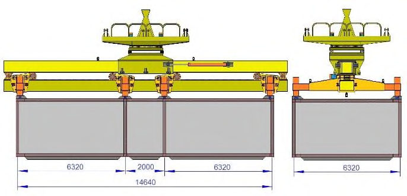
Рисунок 11.2 - Погрузка-выгрузка автомобильным или гусеничным краном
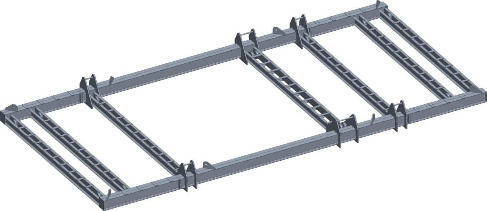
Рисунок 11.3 - Схема расположения и вариант исполнения тумб-опор под проставки при самовыгрузке СТС
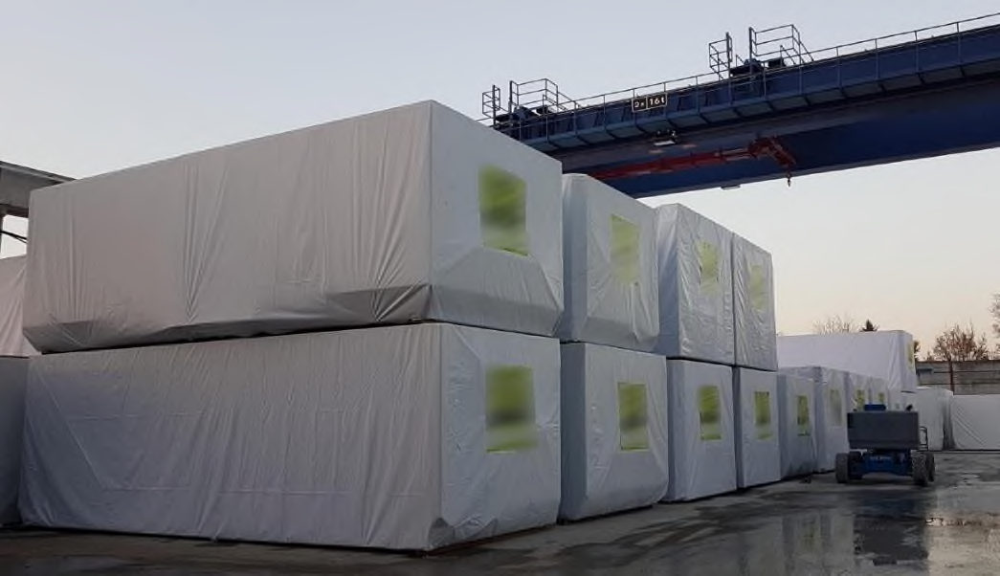
Рисунок 11.4 - Полноповоротная самопозиционируемая траверса
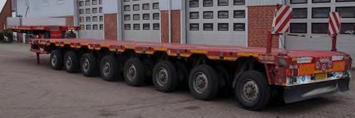
Рисунок 11.5 - Немеханизированная траверса
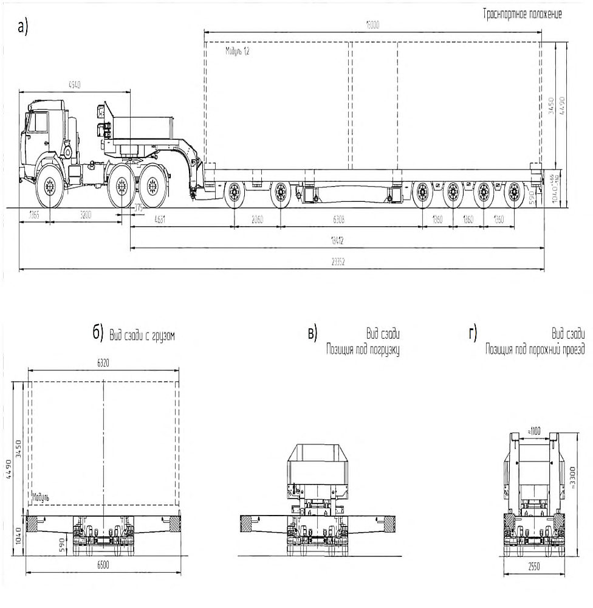
12Обеспечение нормативного качества и безопасности выполнения работ
12.1Геодезические работы и выверка конструкций
- создание геодезической разбивочной основы (ГРО) на местности по 12.1.2-12.1.4;
- построение ГРО на возводимом горизонте по 12.1.5-12.1.7;
- перенос осей при возведении подземной части и первого этажа здания, составление исполнительных схем по 12.1.8 и 12.1.9;
- перенос осей на монтажные горизонты, подготовительные работы к монтажу модулей и составление исполнительных схем конструкций по 12.1.10-12.1.27.
- оси, определяющие положение и габариты здания в плане, закрепленные не менее чем четырьмя створными знаками на каждую ось;
- оси, ограничивающие зоны возведения;
- реперы (не менее двух), расположенные по разные стороны от здания.
- при измерении углов - 10";
- вынесении или определении отметок - 2 мм.
Правильность составления исполнительных схем должны проверять совместно геослужбы организаций -приступающей к возведению надземной части здания и окончившей работы по возведению подземной части здания организаций.
- а) в плане:
- пяти участков стен;
- одной ШЛ на каждую секцию здания; б) по высоте:
- одна отметка опорной поверхности на каждые 50 м² сдаваемого участка.
- 12.1.11.1 Отклонения от проектных положений разбивочных осей не должны превышать следующих значений:
- расстояние между крайними осями по длине здания - ±6 мм;
- двухсекционные здания - ±6 мм;
- расстояние между крайними осями по ширине здания - ±3 мм.
- проверку монтажного горизонта по 12.1.15-12.1.20;
- отметку ориентирных рисок по 12.1.21, 12.1.22.
Регулирование по высоте в этих местах необходимо проводить за счет специальных прокладок.
Отсчеты по рейке, установленной на исходной точке, следует брать по черной и красной сторонам дважды (до начала и до окончания нивелирования). Разность отсчетов по рейке, установленной на исходной точке нивелирования, по одноименным сторонам должна быть не более 2 мм.
Колебания отметок монтажного горизонта не должны превышать 2 мм.
Разметку ориентирных рисок необходимо выполнять от точек базисной осевой системы на монтажном горизонте.
Схемы размещения рисок следует приводить в проекте производства геодезических работ, который разрабатывается с учетом ГРО. Ориентирные риски для монтажа следует указывать для всех модулей, а также ШЛ и сантехкабин.
Для каждого модуля следует наносить три риски: две в продольном направлении и одну в поперечном.
СП 501.1325800.2021
Таблица 12.1
| Наименование отклонений | Предельные отклонения, мм |
|---|---|
| Отклонение плоскостей модулей в верхнем сечении от вертикали (на высоту этажа) | 2 |
| Несоосность двух смежных по высоте модулей | 2 |
Для каждого объемного элемента ШЛ следует выносить ориентирные риски двух взаимно перпендикулярных стен.
Проверку правильности установки объемных элементов ШЛ, сантехкабин следует проводить аналогично проверке основных модулей.
Значения предельных отклонений при монтаже объемных элементов ШЛ с учетом требований СП 70.13330 приведены в таблице 12.2.
Примечание -Низ дверного проема объемного элемента ШЛ следует устанавливать на 20 мм ниже отметки лестничной площадки.
Таблица 12.2
| Наименование отклонений | Предельные отклонения, мм |
|---|---|
| Отклонение от ориентирных рисок передних стенок ШЛвнижнем сечении | 5 |
| Отклонение от вертикали передней и боковой стенок ШЛ | 5 |
| Отклонение по высоте порога дверного проема относительно посадочной площадки | 5 |
| Отклонение внутренней плоскости стен ствола ШЛ от отвесной линии на высотуШЛ | 10 |
Положение модуля в нижнем сечении необходимо определять от ориентирных рисок, а отклонение стен модуля - от вертикали в верхнем сечении.
В тех случаях, когда по результатам исполнительных съемок погрешности монтажа элементов превышают допуски, приведенные в СП 70.13330, необходимо провести переустановку модуля, после чего выполнить повторную съемку.
12.2Контроль качества строительных работ
Результаты входного контроля заносят в журнал входного контроля.
12.2.2.1 При входном контроле следует проводить контроль:
- состава проектной документации;
- применяемых строительных материалов и изделий.
12.2.2.2 Входной контроль состава проектной документации следует проводить в соответствии с СП 48.13330.
12.2.2.3 Входной контроль строительных материалов и изделий включает: а) внешний осмотр и проверку:
- соответствия партии продукции требованиям технических условий, а также требованиям ГОСТ 13015, ГОСТ 7566, ГОСТ 14192 к их маркировке и упаковке;
- наличия и содержания сопроводительных технических документов, подтверждающих соответствие продукции требованиям проекта; б) измерение геометрических показателей продукции и проверку допускаемых их отклонений от требований технических условий и проекта; в) определение показателей качества продукции в случае отсутствия сопроводительных документов, в случае выявленных внешним осмотром дефектов и в других заранее оговоренных заказчиком случаях.
12.2.2.4 Прочность бетона определяют по ГОСТ 18105. Инструментальные измерения прочностных параметров выполняют с использованием метода отрыва со скалыванием по ГОСТ 22690, ультразвукового метода по ГОСТ 17624, а также метода упругого отскока по ГОСТ 22690.
Объем продукции, подлежащей контролю, устанавливают в ППР.
12.2.2.5 Инструментальное измерение геометрических показателей продукции и их отклонений проводят штангенциркулями по ГОСТ 166, линейками по ГОСТ 427, рулетками по ГОСТ 7502, поверочными угольниками и линейками по ГОСТ 3749 и ГОСТ 8026 или другими измерительными приборами.
12.2.2.6 Материалы, не принятые по результатам входного контроля по 12.2.2.3, перечисления а), б) и в), возвращаются с рекламацией. При невозможности возвращения материалов их следует хранить отдельно и использовать только по согласованию с проектной организацией.
12.2.2.7 Металл, используемый для арматурных работ, должен соответствовать проектной документации и требованиям по приемке, маркировке, упаковке, транспортированию и хранению, приведенным в ГОСТ 7566.
12.2.2.8 Подтверждение соответствия показателей поставленных металлических изделий требованиям проектной документации и техническим условиям на их изготовление по 12.2.2.3, перечисление в), должно быть в сопроводительных технических документах поставщиков или получено путем проведения испытаний по методикам, приведенным в ГОСТ 12004 и ГОСТ 14019.
12.2.2.9 При изготовлении бетонной смеси на строительной площадке необходимо контролировать соответствие показателей компонентов бетонной смеси требованиям ГОСТ 7473, ГОСТ 8267, ГОСТ 8269.0, ГОСТ 8736, ГОСТ 10060, ГОСТ 10178, ГОСТ 23732, ГОСТ 24211, ГОСТ 30515, ГОСТ 25192, ГОСТ 26633, ГОСТ 27006, ГОСТ 28570, ГОСТ 31108, ГОСТ 31914, ГОСТ Р 56592 по приведенным в них методикам.
- выноса на монтажный горизонт геодезических отметок и разметки мест установки конструкций;
- подготовки поверхности основания для железобетонного элемента;
- проверки готовности строительных элементов к монтажу;
- установки и временного раскрепления конструкций;
- герметизации стыков;
- арматурных работ;
- сварочных работ;
- антикоррозионных работ;
- постоянного закрепления в соответствии с проектным решением;
- бетонных работ.
- устройства воздухоизоляции стыков;
- установки теплоизоляционных вкладышей;
- установки уплотняющих прокладок (ГОСТ 25621, ГОСТ 30791);
- устройства защитного покрытия.
12.2.8.1 Качество сцепления воздухоизоляционной ленты с поверхностью панели контролируют методом отрыва. При надлежащем сцеплении отрыв происходит по материалу ленты.
12.2.8.2 Операционный контроль качества герметизации стыков мастикой включает:
- проверку подготовки поверхностей кромок стыков;
- контроль температуры мастики;
- контроль толщины и непрерывности слоя мастики.
12.2.8.3 Выполнение герметизационных работ фиксируют в журнале контроля качества герметизационных работ и отмечают посменно на фасадных схемах герметизации стыков в этом журнале.
- а) визуально:
- убедиться в отсутствии на металле наледи, следов бетонной смеси, масляных пятен, коррозии и ржавчины,
- проверить правильность применяемого способа сварки по ГОСТ Р 57997,
- проверить на отсутствие дефектов каждое сварное соединение и перевязку вязальной проволокой; б) в соответствии с требованиями ГОСТ 26433.2 выполнить измерения следующих геометрических параметров:
- установка элементов,
- длины соединений; в) провести оценку правильности установки элементов сравнением полученных результатов измерений геометрических параметров их установки с предусмотренными в проектной документации, настоящем своде правил и СП 70.13330 допусками на отклонения.
- а) проверку поверхности основания для укладки бетона по 12.2.5;
- б) контроль параметров бетонной смеси по 12.2.2.9;
- в) визуальный контроль уплотнения бетонной смеси;
- г) визуальный контроль выдерживания и ухода за бетоном.
- визуальную проверку соответствия геометрии выполненных в натуре конструкций рабочим чертежам проекта и внесенным в них изменениям, оформленных в соответствии с требованиями СП 68.13330;
- инструментальную проверку требованиям проекта сечений элементов и катета швов сварных металлических конструкций штангенциркулями по ГОСТ 166, линейками по ГОСТ 427 и рулетками по ГОСТ 7502 с учетом допускаемых отклонений;
- проверку документов о качестве или других документов (записей в журнале входного контроля), удостоверяющих качество материалов, конструкций и изделий, применяемых при производстве строительномонтажных работ, требованиям проектной документации и ППР;
- проверку соответствия результатов промежуточных обследований и выборочных проверок выполненных конструкций требованиям проекта;
- проверку результатов испытаний материалов и их соединений, применяемых при производстве работ, на соответствие их требованиям проектной документации и ППР;
- проверку актов (освидетельствования и приемки) и записей в общем и специальном журналах учета выполненных работ, а также в журнале авторского надзора;
- проверку иной исполнительной документации при производстве работ, предусмотренной проектной документацией, СП 246.1325800 и другими нормативными документами, регламентирующими порядок ведения исполнительной документации.
12.3Безопасность производства, охрана труда и окружающей среды
Требования к организации системы обучения безопасности труда изложены в ГОСТ 12.0.004, а общие требования системы управления охраной труда содержатся в ГОСТ 12.0.230.
АПриложение А. Транспортирование крупногабаритных модулей
А.1 По параметрам и массе КГМ относятся к грузам, транспортируемым по правилам [12, пункт 23]. Для транспортирования модулей требуется специальное разрешение в соответствии с [13].
А.2 Для обеспечения безопасного дорожного движения транспортное средство должно быть оборудовано в соответствии с [14].
А.3 Внутризаводское транспортирование или перемещение модулей обеспечивается работой соответствующего технологического оборудования рольганги, передаточные телеги, тяжелые мостовые или козловые краны.
При перемещении необходимо обеспечить строго горизонтальное положение модуля.
А.4 Завершенные производством и упакованные в защитный материал объемные модули транспортируются в складское помещение по рольгангам передвижения с помощью специальных тележек, где должны быть обеспечены тепловой режим и мероприятия по защите конструкций от воздействия атмосферных осадков. При складировании модули находятся постоянно в горизонтальном положении, с опиранием нижней части на основания пилонов. При складировании отклонения опорной поверхности пилонов в одной плоскости более чем на 5 мм не допускаются (рисунок А.1).
А.5 Прочность бетона всех элементов модуля при складировании на заводе-изготовителе перед днем отгрузки должна быть не менее 100 % проектного класса. Во избежание ударов опорных поверхностей пилонов и других частей модуля в процессе перемещения, при складировании и погрузке на устройстве передвижения все манипуляции необходимо проводить тяжелыми козловыми или мостовыми кранами ( Q = 100 т) с минимальной скоростью горизонтального передвижения, а также вертикального перемещения груза.
А.6 Транспортирование модулей на строительную площадку проводится только специализированными транспортными средствами (СТС) -низкорамными грузовыми платформами, запроектированными так, чтобы модули опирались на платформу в местах опорных закладных деталей нижней части пилонов.
Рисунок А.1 - Складирование модулей
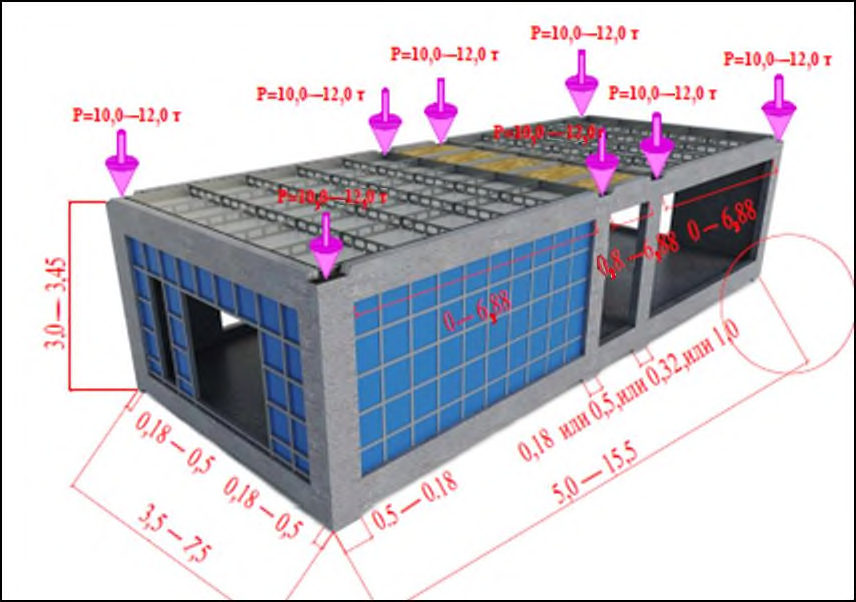
А.7 При проектировании грузовой платформы для перемещения КГМ со смещенным центром тяжести необходимо разработать мероприятия, обеспечивающие точную горизонтальную перевозку груза за счет автоматического выравнивания грузовой платформы гидравлическими или пневматическими стабилизаторами. Для этого при перевозке следует использовать детали крепления, распорки и другие приспособления, обеспечивающие стабильность положения и уменьшение динамических нагрузок на отдельные элементы модуля.
А.8 Параметры и характеристики СТС согласовываются с заводом изготовителем модулей.
А.9 Для обеспечения высокой маневренности и устойчивости СТС с модулем при транспортировании по автомобильным дорогам общего пользования, территориям строительной площадки и завода-изготовителя. СТС должны быть с принудительным рулевым управлением и гидравлической подвеской (рисунок А.2).
Рисунок А.2 - Грузовая платформа
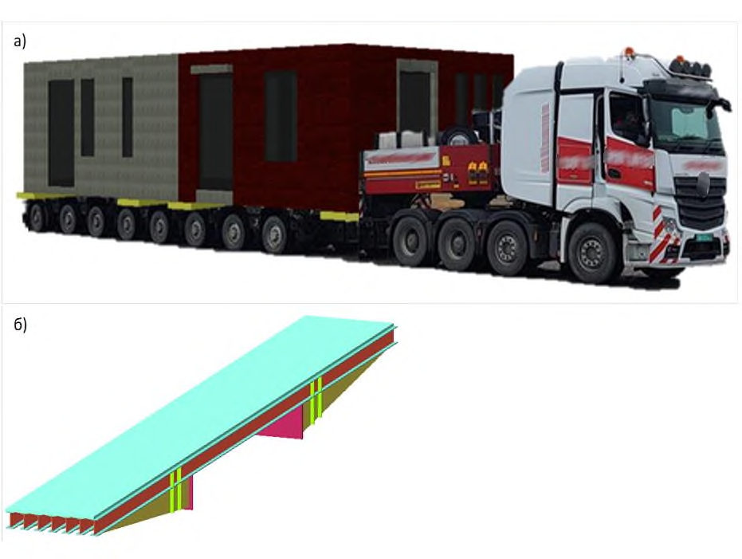
А.10 Для обеспечения транспортирования модулей СТС могут доукомплектовываться системой гидравлических опор (рисунок А.3), опорный контур которых приходится на пилоны (рисунок А.4), с шириной от 4800 до 7500 мм.
А.11 При транспортировании допускается применение специально запроектированных и изготовленных проставок, применяемых на стандартных транспортных средствах (рисунок А.5)
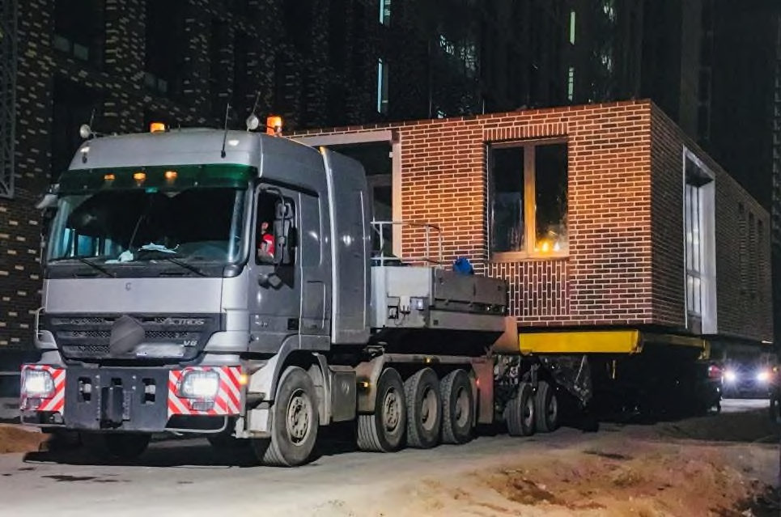
а - общий вид; б - вид сзади с грузом; в - позиция под загрузку; г - позиция под порожний проезд
Рисунок А.3 - СТС, укомплектованное системой гидравлических опор
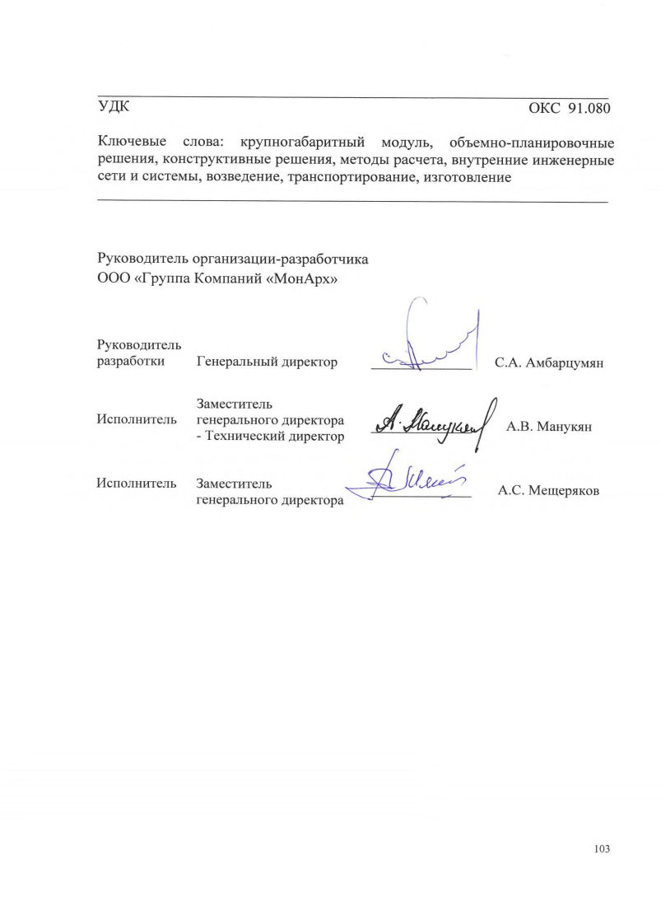
Рисунок А.4 - Габариты и точки опирания
а - общий вид; б - «проставка»
Рисунок А.5 - Перевозка модулей на стандартных транспортных средствах
А.12 При осуществлении крепления модулей на СТС следует учитывать наличие фасадов и отделочных материалов на модуле. Способы и методы крепления проектируются индивидуально в соответствии с конфигурацией и весогабаритными характеристиками модуля и СТС. Крепление должно обеспечивать условия безопасности дорожного движения и сохранность модуля на всем маршруте его транспортирования.
А.13 При организации безопасности дорожного движения при перевозке нужно учитывать весогабаритные характеристики СТС с грузом (модулем), особенности дорожной инфраструктуры (подмостовые габариты под путепроводами/мостами, железнодорожные переезды, наличие на маршруте троллейбусно-трамвайных контактных сетей, воздушных линий электропередачи, радиусы поворотов, тип и качество дорожного полотна и т. д.). По итогам обследования маршрута составляется отчет, в котором должны быть отражены все особенности маршрута.
А.14 Транспортирование КГМ следует проводить по утвержденному графику производства и комплектации, в ночное время в сопровождении спецтранспорта (рисунок А.6).
Рисунок А.6 - Пример транспортирования модуля
А.15 Для перевозок модулей на дальние расстояния могут быть использованы кроме автомобильного транспорта железнодорожный, морской и речной. Для транспортирования модулей в облегченном варианте допускается использовать воздушный транспорт.
Библиография
- [1] Федеральный закон от 30 декабря 2009 г. № 384-ФЗ «Технический регламент о безопасности зданий и сооружений»
- [2] Федеральный закон от 27 декабря 2002 г. № 184-ФЗ «О техническом регулировании»
- [3] Федеральный закон от 23 ноября 2009 г. № 261-ФЗ «Об энергосбережении и о повышении энергетической эффективности и о внесении изменений в отдельные законодательные акты Российской Федерации»
- [4] Федеральный закон от 29 декабря 2004 г. № 190-ФЗ «Градостроительный кодекс Российской Федерации»
- [5] Федеральный закон от 22 июля 2008 г. № 123-ФЗ «Технический регламент о требованиях пожарной безопасности»
- [6] Рекомендации по проектированию стальных закладных деталей для железобетонных конструкций/НИИЖБ Госстроя СССР. - М.: Стройиздат, 1984. - 87 с.
- [7] Пособие по проектированию жилых зданий. Выпуск 3. Часть 1, 2. Конструкции жилых зданий (к СНиП 2.08.01-85) / ЦНИИЭП жилища Москомархитектуры. - М.: Стройиздат, 1989. - 304 с.
- [8] ПУЭ Правила устройства электроустановок (7-е изд.)
- [9] Указ Президента Российской Федерации от 24 июня 2009 г. № 715 «Об общероссийских обязательных общедоступных телеканалах и радиоканалах»
- [10] РД-11-02-2006 Требования к составу и порядку ведения исполнительной документации при строительстве, реконструкции, капитальном ремонте объектов капитального строительства и требования, предъявляемые к актам освидетельствования работ, конструкций, участков сетей инженерно-технического обеспечения
- [11] РД-11-05-2007 Порядок ведения общего и (или) специального журнала учета выполнения работ при строительстве, реконструкции, капитальном ремонте объектов капитального строительства
- [12] Постановление Правительства Российской Федерации от 23 октября 1993 г. № 1090 «О Правилах дорожного движения»
- [13] Приказ Министерства транспорта Российской Федерации от 5 июня 2019 г. № 167 «Об утверждении порядка выдачи специального разрешения на движение по автомобильным дорогам тяжеловесного и (или) крупногабаритного транспортного средства»
- [14] Приказ Министерства транспорта Российской Федерации от 31 августа 2020 г. № 343 «Об утверждении требований к организации движения по автомобильным дорогам тяжеловесного и (или) крупногабаритного транспортного средства»